Source: R.C.T. Lee, Tseng, Chang, Tsai — Introduction to the Design and Analysis of Algorithms, Chapter 6. Deck:
Alg05(1).ppt. Figure/Table numbers (Fig. 6-x, Table 6-x) are preserved so you can cross-check against the slides.出處：R.C.T. Lee、Tseng、Chang、Tsai — Introduction to the Design and Analysis of Algorithms，第 6 章。投影片：Alg05(1).ppt。圖表編號（Fig. 6-x、Table 6-x）都有保留，方便你跟投影片對照。
This chapter surveys searching strategies that explore a solution-space tree (also called a state-space tree). Many hard problems can be cast as "search a tree of candidate (partial) solutions," and the searching strategy decides the order in which nodes are expanded.這一章在講各種 searching strategies（搜尋策略），重點是怎麼去走一棵 solution-space tree（解空間樹，也叫 state-space tree）。很多難題其實都可以改寫成「在一棵候選（部分）解的樹裡面搜尋」，而搜尋策略決定的就是節點展開的順序。
The chapter is organized in two halves:整章分成兩半：
Search strategies for decision / feasibility problems (find a solution, or decide if one exists):
- Satisfiability problem (tree of 2ⁿ assignments)
- Hamiltonian circuit problem
- Sum-of-subsets problem
- Depth-first search (DFS) — guided by a stack
- Breadth-first search (BFS)
- Hill climbing — a greedy variant of DFS (8-puzzle)
- Best-first search — combines DFS + BFS, global view (8-puzzle)給 decision／feasibility 問題用的搜尋策略（找出某一個解，或判斷到底存不存在解）：
- Satisfiability problem（2ⁿ 種 assignment 構成的樹）
- Hamiltonian circuit problem
- Sum-of-subsets problem
- Depth-first search (DFS) — 用一個 stack 來帶路
- Breadth-first search (BFS)
- Hill climbing — DFS 的 greedy 版本（8-puzzle）
- Best-first search — 結合 DFS + BFS，有全域視野（8-puzzle）
Search strategies for optimization problems (find the best solution):
- Branch-and-bound — the master strategy for optimization (multi-stage graph)
- Personnel assignment problem (cost matrix, partial order of jobs, topological sort)
- Travelling salesperson problem (reduced cost matrices, lower bounds, decision tree)
- 0/1 knapsack problem (upper/lower bounds via fractional relaxation)
- A* algorithm — best-first search with f(n) = g(n) + h(n), h(n) ≤ h*(n)
- Channel routing problem (HCG, vertical constraint graph, max cliques, A*)給 optimization 問題用的搜尋策略（找出最好的那個解）：
- Branch-and-bound — 解最佳化問題的招牌策略（multi-stage graph）
- Personnel assignment problem（cost matrix、jobs 的 partial order、topological sort）
- Travelling salesperson problem（reduced cost matrix、lower bound、decision tree）
- 0/1 knapsack problem（用 fractional relaxation 算 upper／lower bound）
- A* algorithm — best-first search 加上 f(n) = g(n) + h(n)、h(n) ≤ h*(n)
- Channel routing problem（HCG、vertical constraint graph、max cliques、A*）
Key reason DFS/BFS/hill-climbing/best-first cannot solve optimization problems directly: they stop at the first goal node found, which need not be optimal. Branch-and-bound and A* add bounding so the optimal goal is guaranteed.為什麼 DFS／BFS／hill-climbing／best-first 沒辦法直接拿來解最佳化問題？關鍵在於：它們碰到第一個 goal node 就停了，但那個不一定是最佳解。Branch-and-bound 跟 A* 多加了 bounding，所以才能保證拿到最佳的 goal。
Given a Boolean formula in n variables x₁, x₂, …, xₙ, decide whether there is a truth assignment making it true. There are 2ⁿ possible assignments, which can be laid out as a binary tree of depth n: at level i we branch on xᵢ = true vs xᵢ = false (Tree Representation of Eight Assignments shows n = 3 → 2³ = 8 leaves).給你一個有 n 個變數 x₁, x₂, …, xₙ 的布林式，問：有沒有一組 truth assignment 能讓它變成 true？總共有 2ⁿ 種 assignment，可以排成一棵深度 n 的 binary tree：在第 i 層就分岔成 xᵢ = true 跟 xᵢ = false（Tree Representation of Eight Assignments 畫的就是 n = 3 → 2³ = 8 片葉子的情況）。
A conjunction of clauses (each line is a clause that must hold). Using ¬ for negation and ∨ for OR:一堆 clause 用 AND 串起來（每一行就是一個必須成立的 clause）。用 ¬ 代表否定、∨ 代表 OR：
(1) ¬x₁
(2) x₁
(3) x₂ ∨ x₅
(4) x₃
(5) ¬x₂
✅ Verified against slide 3: the slide writes
-x₁,x₁,x₂ v x₅,x₃,-x₂exactly as clauses (1)–(5).-x= ¬x,v= ∨. The clauses are a set that must all hold simultaneously.✅ 對照投影片 3：上面寫的 clause (1)–(5) 就是-x₁、x₁、x₂ v x₅、x₃、-x₂。其中-x= ¬x、v= ∨。這幾個 clause 是一組，必須同時全部成立。
Notice clauses (1) ¬x₁ and (2) x₁ directly contradict each other, so this particular instance is unsatisfiable — which is exactly the point: a partial assignment can already reveal a contradiction. The partial tree on slide 3 shows the root branching X₁=T / X₁=F, and both children are labeled "(1) falsified" / "(2) falsified" — i.e. either choice of X₁ immediately falsifies a clause.你會發現 clause (1) ¬x₁ 跟 (2) x₁ 根本互相矛盾，所以這個例子是 unsatisfiable（無解）—— 而這正是重點：光是一組部分 assignment 就能看出矛盾。投影片 3 的部分樹中，root 分出 X₁=T / X₁=F，兩邊子節點都標了「(1) falsified」/「(2) falsified」，也就是說 X₁ 不管選哪個，馬上就有一個 clause 被踩爆。
✅ The full 2³ truth table is on slide 2 (columns x₁,x₂,x₃): FFF, FFT, FTF, FTT, TFF, TFT, TTF, TTT — the eight assignments enumerated by the "Tree Representation of Eight Assignments."✅ 完整的 2³ truth table 在投影片 2（欄位 x₁,x₂,x₃）：FFF, FFT, FTF, FTT, TFF, TFT, TTF, TTT —— 就是「Tree Representation of Eight Assignments」列出來的那八種 assignment。
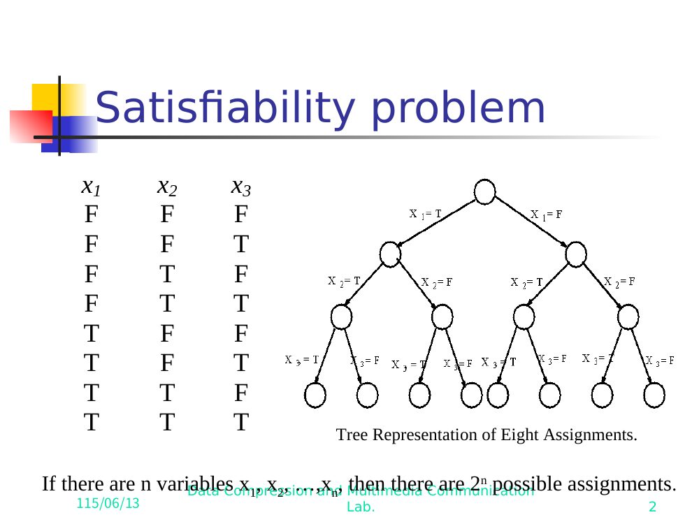
A Partial Tree to Determine the Satisfiability Problem: We may not need to examine all 2ⁿ assignments. As soon as a partial assignment violates a clause, that entire subtree is abandoned (pruned). This early termination motivates tree-search strategies and, later, bounding.A Partial Tree to Determine the Satisfiability Problem：其實不一定要把 2ⁿ 種 assignment 全部試過。只要一組部分 assignment 違反了某個 clause，那整棵 subtree 就直接砍掉（prune）。這種提早收手的概念，就是後面 tree-search 策略、以及 bounding 的由來。
A Hamiltonian circuit is a cycle that visits every vertex of a graph exactly once and returns to the start. The problem: does a given graph contain one?Hamiltonian circuit 就是一個環，把圖上每個頂點剛好走過一次，最後再繞回起點。問題是：給你一張圖，它裡面到底有沒有這種環？
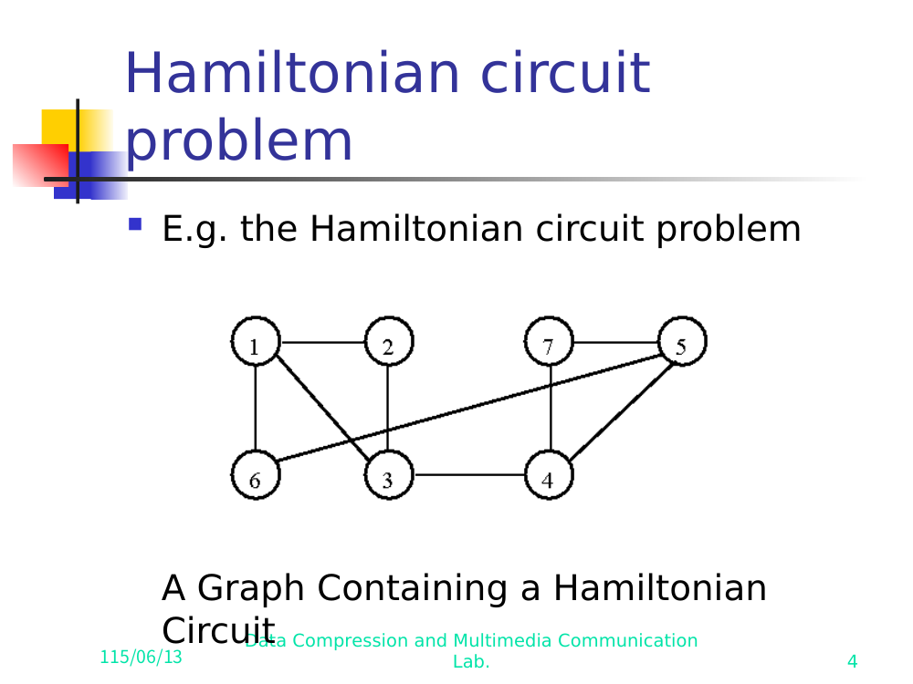
n that reuses no vertex and closes back to the start is a Hamiltonian circuit.Fig. 6-8 — The Tree Representation of Whether There Exists a Hamiltonian Circuit of the Graph in Fig. 6-6：建一棵樹，每一層就選下一個要走的頂點。如果有一條從 root 到深度 n 葉子的路徑，沒有重複用到任何頂點、而且最後又接回起點，那就是一個 Hamiltonian circuit。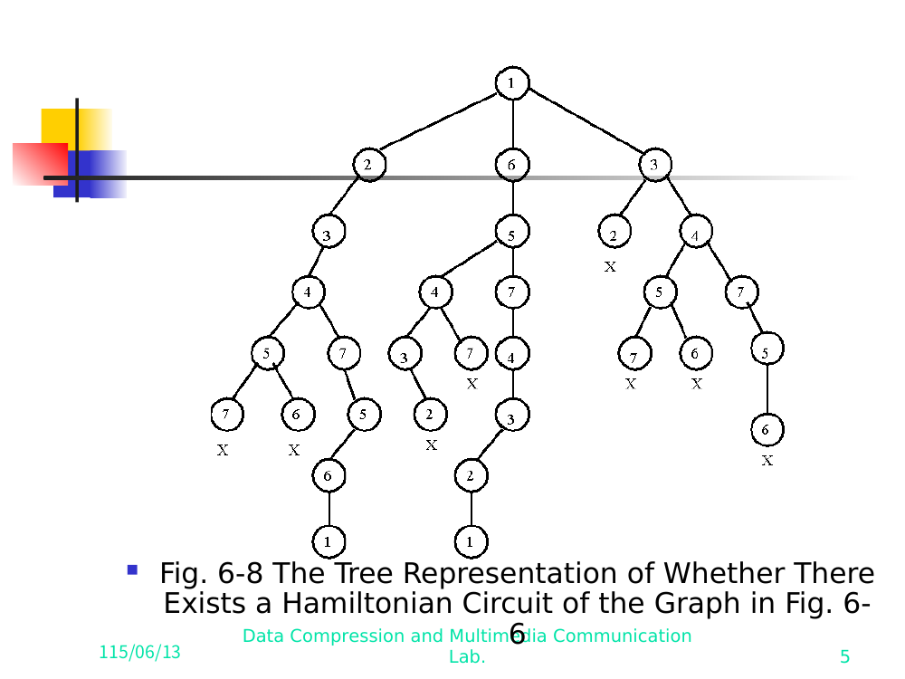
✅ Verified against slide 5 (Fig. 6-8) and slide 4 (Fig. 6-6): the full search tree is transcribed (root at vertex 1; two paths close back to 1 to give a Hamiltonian circuit, all other branches end in
X). The underlying Fig. 6-6 graph is now also read directly from slide 4 (see Appendix A). The search idea (extend partial paths, backtrack on dead ends) is standard.✅ 對照投影片 5（Fig. 6-8）跟投影片 4（Fig. 6-6）：整棵搜尋樹都抄下來了（root 在頂點 1；有兩條路徑接回 1 形成 Hamiltonian circuit，其他分支全部以X收場）。底層的 Fig. 6-6 圖現在也直接從投影片 4 讀出來（看附錄 A）。搜尋的概念（延伸部分路徑、碰到死路就 backtrack）是標準做法。
Given a set S and a target, find a subset S′ ⊆ S whose elements sum to the target.給你一個集合 S 跟一個 target，問：能不能挑出一個子集合 S′ ⊆ S，讓裡面元素加起來剛好等於 target？
S = {7, 5, 1, 2, 10}
Find S′ ⊆ S with sum(S′) = 9 ?
(Answer: {7, 2}, since 7 + 2 = 9. The slide's tree, Fig. 6-11, enumerates the candidate subsets via depth-first search.)（答案是 {7, 2}，因為 7 + 2 = 9。投影片上的樹 Fig. 6-11 就是用 depth-first search 把候選子集合一個一個列出來。）
✅ Verified against slide 6 (Fig. 6-11). The DFS tree: root =
0; edgeX₁=7→ node7; from7: edgeX₂=5→12(markedx, exceeds 9), edgeX₂=1→8, edgeX₂=2→9labeled Goal Node (7+2=9). From8: edgeX₃=2→10(x), edgeX₃=10→18(x). So the satisfying subset is {7, 2} and the goal node holds the running sum 9.✅ 對照投影片 6（Fig. 6-11）。這棵 DFS 樹：root =0；邊X₁=7→ 節點7；從7再分：邊X₂=5→12（標x，超過 9），邊X₂=1→8，邊X₂=2→9標成 Goal Node（7+2=9）。從8再分：邊X₃=2→10（x），邊X₃=10→18（x）。所以符合的子集合是 {7, 2}，goal node 上記的累加和就是 9。
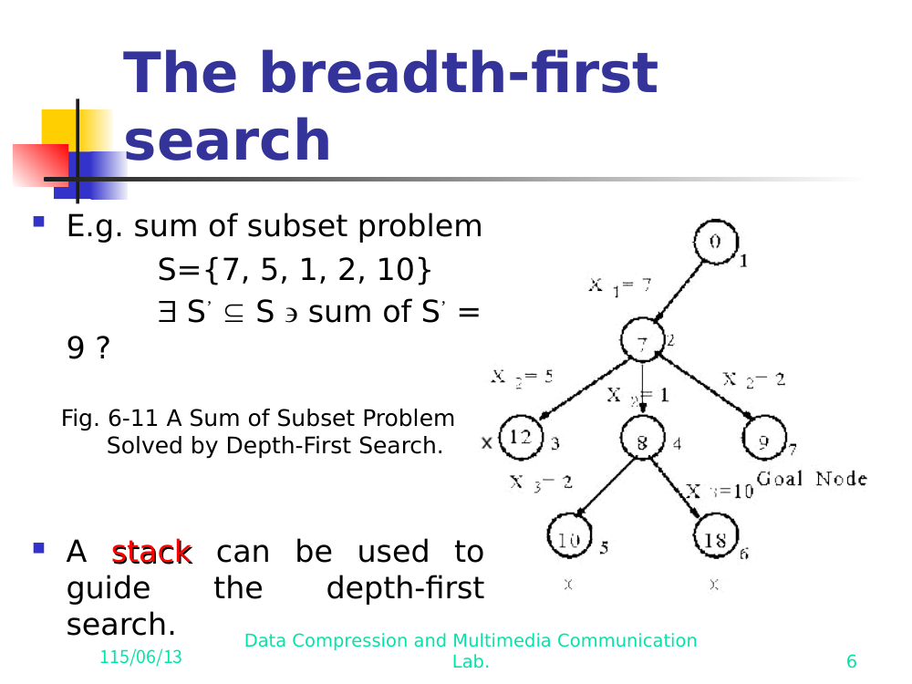
i, decide whether element i is in or out of S′.建一棵 binary tree：在第 i 層就決定第 i 個元素要放進還是不放進 S′。DFS procedure (general): 1. Push the root onto the stack. 2. Pop a node; if it is a goal, stop. 3. Otherwise push its children; repeat from step 2 until the stack is empty.DFS 流程（通用版）： 1. 把 root push 進 stack。 2. pop 出一個節點；如果它是 goal，就停。 3. 否則把它的小孩全部 push 進去；從第 2 步重複，直到 stack 清空。
LIFO ordering of the stack gives the deep-first exploration order.stack 的 LIFO 特性，自然就給出了「先往深處走」的探索順序。
Explore the tree level by level: expand all nodes at depth d before any node at depth d+1. Implemented with a queue (FIFO) instead of a stack.BFS 是一層一層地走：先把深度 d 的節點全部展開，才會碰深度 d+1 的任何節點。實作上是用 queue（FIFO），而不是 stack。
✅ Verified against slide 6: the slide titled "The breadth-first search" actually carries the sum-of-subset DFS example (Fig. 6-11) as its illustration — there is no separate BFS figure or example in the deck. BFS is the FIFO counterpart of the DFS in §3 (same tree, different expansion order).✅ 對照投影片 6：那張標題寫「The breadth-first search」的投影片，其實放的是 sum-of-subset 的 DFS 例子（Fig. 6-11） —— 整份投影片裡沒有獨立的 BFS 圖或例子。BFS 就是 §3 那個 DFS 的 FIFO 版本（同一棵樹，只是展開順序不同）。
Hill climbing is a variant of depth-first search in which, instead of expanding children in fixed order, the method selects the locally optimal node to expand (the child that looks best by an evaluation function). It is greedy and local — it commits to the locally best child and can get stuck.Hill climbing 是 depth-first search 的變形：它不是照固定順序展開小孩，而是每次挑當下看起來最好的那個節點展開（也就是用某個 evaluation function 評分後最好的那個小孩）。它是 greedy 而且只看局部的 —— 一旦認定了局部最好的小孩就鑽下去，所以有可能會卡住。
For the 8-puzzle (a 3×3 board with tiles 1–8 and one blank, slide tiles to reach a goal configuration):8-puzzle 是一個 3×3 的盤面，上面有 1–8 的方塊跟一個空格，你要靠滑動方塊把盤面排成目標樣式：
f(n) = d(n) + w(n)
d(n) = depth of node n (number of moves made so far)
w(n) = number of misplaced tiles in node n
Lower f(n) is better. At each step expand the child minimizing f.f(n) 越小越好。每一步就展開讓 f 最小的那個小孩。
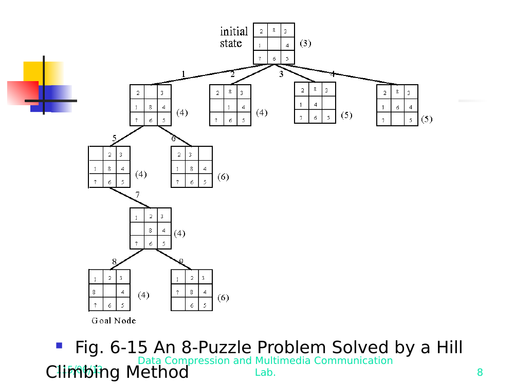
✅ Verified against slide 8 (Fig. 6-15): the board states and per-node parenthesized evaluation values are transcribed (see Appendix A). Hill-climbing path:
initial(3) → 1(4) → 5(4) → 7(4) → 8 (Goal), always descending to the locally best child. The functionf(n) = d(n) + w(n)and the "expand locally best child" rule are explicit on slide 7.✅ 對照投影片 8（Fig. 6-15）：每個盤面狀態跟節點旁括號裡的評估值都抄下來了（看附錄 A）。Hill-climbing 路徑：initial(3) → 1(4) → 5(4) → 7(4) → 8 (Goal)，每一步都往局部最好的小孩走下去。函式f(n) = d(n) + w(n)跟「展開局部最好的小孩」這條規則，在投影片 7 都有明寫。
Combines depth-first search and breadth-first search. Rather than committing to a local best (hill climbing) or a rigid level order (BFS), best-first selects the node with the best estimated cost among all open nodes anywhere in the tree. Because it can jump to the globally most promising node, this method has a global view.把 depth-first search 跟 breadth-first search 結合起來。它不像 hill climbing 死守局部最好、也不像 BFS 硬照層序走，而是從樹上所有還沒展開的節點裡，挑估計成本最好的那個，不管它在哪。因為它可以直接跳到全域最有希望的節點，所以這個方法是有全域視野的。
f(n) = d(n) + w(n) as hill climbing, but chosen globally).Fig. 6-16 — An 8-Puzzle Problem Solved by a Best-First Search Scheme（evaluation function 跟 hill climbing 一樣是 f(n) = d(n) + w(n)，差別在於這次是從全域去挑）。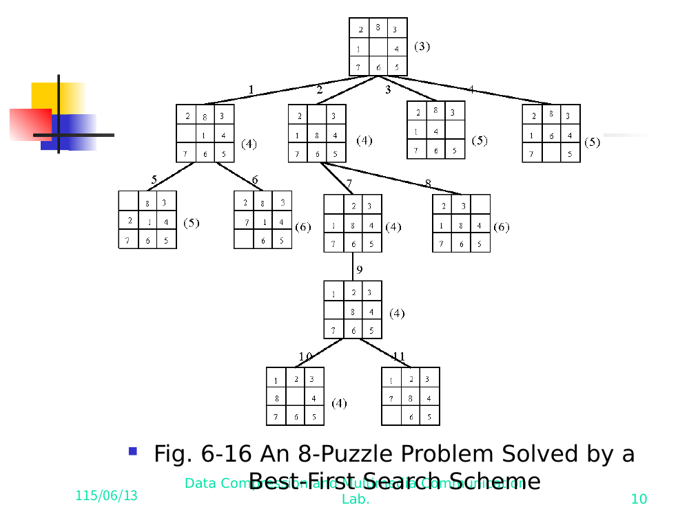
Step 1. Form a one-element list consisting of the root node.Step 1. 建一個只有 root 一個元素的 list。
Step 2. Remove the first element from the list. Expand it. If one of the descendants of this element is a goal node, then stop; otherwise, add the descendants into the list.Step 2. 從 list 拿掉第一個元素，把它展開。如果它的後代裡有一個是 goal node，就停；否則把這些後代全部加進 list。
Step 3. Sort the entire list by the values of some estimation function.Step 3. 用某個 estimation function 的值把整個 list 排序。
Step 4. If the list is empty, then failure. Otherwise, go to Step 2.Step 4. 如果 list 空了，就失敗；否則回到 Step 2。
The sort in Step 3 is what makes the first element in Step 2 always the globally best-looking node.就是 Step 3 那個排序，讓 Step 2 每次拿到的第一個元素，永遠是全域看起來最好的那個節點。
Branch-and-bound can be used to solve optimization problems — and is needed because DFS, BFS, hill climbing, and best-first search cannot (they halt at the first goal, not the best one).Branch-and-bound 可以拿來解 optimization 問題 —— 而且非用它不可，因為 DFS、BFS、hill climbing、best-first search 都做不到（它們碰到第一個 goal 就停了，不是最佳的那個）。
Two ingredients: - Branching — split the solution space into subsets (subtrees), as in any tree search. - Bounding — compute, for each node, a bound on the best solution obtainable in its subtree. If a node's bound is worse than the best complete solution already found, prune the entire subtree.兩個要件： - Branching（分支） —— 把解空間切成一塊塊子集合（subtree），跟一般 tree search 一樣。 - Bounding（定界） —— 對每個節點算一個 bound，代表它那棵 subtree 裡最好能拿到的解。如果某個節點的 bound 比你目前已經找到的最佳完整解還差，那整棵 subtree 直接砍掉（prune）。
For a minimization problem you maintain a lower bound per node and an upper bound = best feasible solution found so far; prune any node whose lower bound ≥ current best.如果是最小化問題，你會給每個節點維護一個 lower bound，再維護一個 upper bound = 目前找到的最佳可行解；只要某節點的 lower bound ≥ 目前最佳值，就把它砍掉。
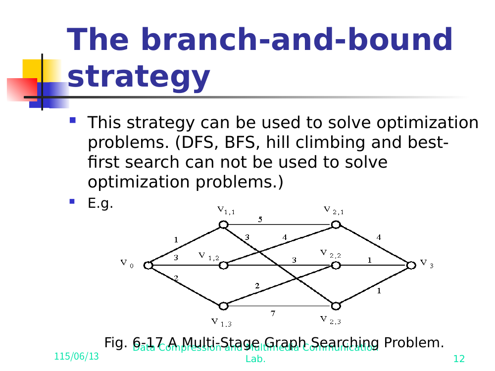
✅ Verified against slide 12 (Fig. 6-17): Correction — Fig. 6-17 is the multi-stage graph with vertices
V₀, V₁,₁ V₁,₂ V₁,₃, V₂,₁ V₂,₂ V₂,₃, V₃(NOT theS,V₁..V₅,Tgraph — that one is Fig. 6-36, the A* example on slide 36). Fig. 6-17 edge weights (slide 12, disambiguated by the B&B tree on slide 13):V₀→V₁,₁=1, V₀→V₁,₂=3, V₀→V₁,₃=2;V₁,₁→V₂,₁=5, V₁,₁→V₂,₃=3;V₁,₂→V₂,₁=4, V₁,₂→V₂,₂=3;V₁,₃→V₂,₂=2, V₁,₃→V₂,₃=7;V₂,₁→V₃=4, V₂,₂→V₃=1, V₂,₃→V₃=1. The best-first B&B search tree for this graph is on slide 13 (Appendix A). See Appendix A "Fig. 6-17 correction."✅ 對照投影片 12（Fig. 6-17）：更正 —— Fig. 6-17 其實是頂點為V₀, V₁,₁ V₁,₂ V₁,₃, V₂,₁ V₂,₂ V₂,₃, V₃的 multi-stage graph（不是S,V₁..V₅,T那張 —— 那張是 Fig. 6-36，投影片 36 的 A* 例子）。Fig. 6-17 的 edge 權重（投影片 12，再用投影片 13 的 B&B 樹來確認）：V₀→V₁,₁=1, V₀→V₁,₂=3, V₀→V₁,₃=2；V₁,₁→V₂,₁=5, V₁,₁→V₂,₃=3；V₁,₂→V₂,₁=4, V₁,₂→V₂,₂=3；V₁,₃→V₂,₂=2, V₁,₃→V₂,₃=7；V₂,₁→V₃=4, V₂,₂→V₃=1, V₂,₃→V₃=1。這張圖的 best-first B&B 搜尋樹在投影片 13（附錄 A）。詳見附錄 A 的「Fig. 6-17 correction」。
P = {P₁, P₂, …, Pₙ} with P₁ < P₂ < … < Pₙ.一組線性排序（linearly ordered）的人 P = {P₁, P₂, …, Pₙ}，滿足 P₁ < P₂ < … < Pₙ。J = {J₁, J₂, …, Jₙ}.一組偏序（partially ordered）的工作 J = {J₁, J₂, …, Jₙ}。Pᵢ and Pⱼ are assigned to jobs f(Pᵢ) and f(Pⱼ), then f(Pᵢ) ≤ f(Pⱼ) whenever Pᵢ ≤ Pⱼ (the assignment must respect the partial order of jobs — a feasible assignment).限制：如果 Pᵢ 跟 Pⱼ 分別被指派到工作 f(Pᵢ) 跟 f(Pⱼ)，那麼只要 Pᵢ ≤ Pⱼ，就必須 f(Pᵢ) ≤ f(Pⱼ)（這個指派要符合 jobs 的 partial order，才算一個可行（feasible）的指派）。Cᵢⱼ = cost of assigning person Pᵢ to job Jⱼ.Cᵢⱼ = 把人 Pᵢ 指派到工作 Jⱼ 的成本。Xᵢⱼ = 1 if Pᵢ is assigned to Jⱼ, else 0.決策變數：Pᵢ 被指派到 Jⱼ 時 Xᵢⱼ = 1，否則為 0。Objective:目標：
Minimize Σᵢ Σⱼ Cᵢⱼ · Xᵢⱼ
subject to each person getting exactly one job, each job exactly one person, and the partial-order feasibility constraint.限制條件是：每個人剛好拿到一份工作、每份工作剛好分給一個人，並且要滿足 partial-order 的可行性限制。
✅ Verified against slide 14: the slide states it as "If f(Pᵢ) ≤ f(Pⱼ), then Pᵢ ≤ Pⱼ" (an order-preserving / monotone feasibility rule). Cost
Cᵢⱼ= cost of assigning Pᵢ to Jⱼ;Xᵢⱼ = 1if Pᵢ→Jⱼ else 0; minimizeΣᵢ,ⱼ CᵢⱼXᵢⱼ.✅ 對照投影片 14：投影片上寫的是 「If f(Pᵢ) ≤ f(Pⱼ), then Pᵢ ≤ Pⱼ」（一條保序／單調的可行性規則）。成本Cᵢⱼ= 把 Pᵢ 指派給 Jⱼ 的成本；Xᵢⱼ = 1表示 Pᵢ→Jⱼ，否則 0；目標是最小化Σᵢ,ⱼ CᵢⱼXᵢⱼ。
Fig. 6-21 — A Partial Ordering of Jobs. ✅ Verified against slide 15 — the diagram is two simple vertical arrows only (no diagonal):Fig. 6-21 — A Partial Ordering of Jobs。✅ 對照投影片 15 —— 這張圖就只有兩條直的箭頭，沒有斜的：
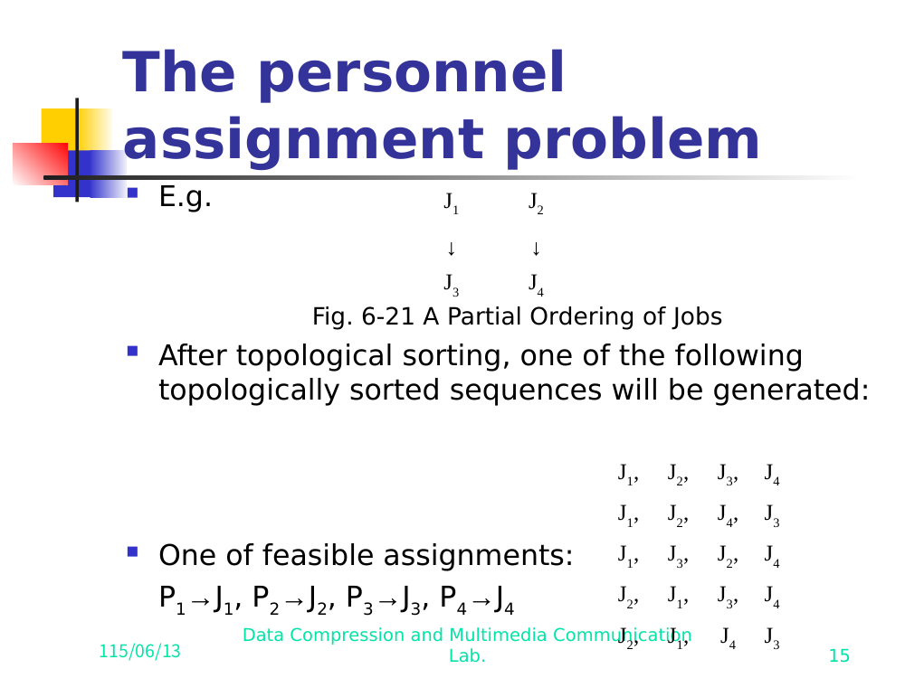
J1 J2
↓ ↓
J3 J4
✅ Verified against slide 15: the arrows are exactly
J1 → J3andJ2 → J4. There is noJ1 → J4diagonal (the earlier reconstruction's↘was wrong). So J1 precedes J3, and J2 precedes J4; J1/J2 are incomparable, as are J3/J4.✅ 對照投影片 15：箭頭就只有J1 → J3跟J2 → J4。沒有J1 → J4那條斜線（之前重建版本的↘是錯的）。所以 J1 排在 J3 前面、J2 排在 J4 前面；J1/J2 之間沒有先後關係，J3/J4 之間也沒有。
A feasible assignment corresponds to a topological order of the jobs (one that respects all precedence arrows). The slide lists several topologically sorted sequences that can be generated:一個可行的指派，對應到的就是 jobs 的一個 topological order（要符合所有先後箭頭的順序）。投影片列了幾個可以生成的 topological sort 序列：
J1, J2, J3, J4
J1, J2, J4, J3
J1, J3, J2, J4
J2, J1, J3, J4
J2, J1, J4, J3
✅ Verified against slide 15: the five topologically-sorted sequences listed above are exactly those shown on the slide.✅ 對照投影片 15：上面列的五個 topological sort 序列，跟投影片上的完全一樣。
One feasible assignment:一個可行的指派：
P1 → J1, P2 → J2, P3 → J3, P4 → J4
✅ Verified against slide 15.✅ 對照投影片 15。
Table 6-1 — A Cost Matrix for a Personnel Assignment Problem (rows = persons, columns = jobs):Table 6-1 — A Cost Matrix for a Personnel Assignment Problem（列 = 人，欄 = 工作）：
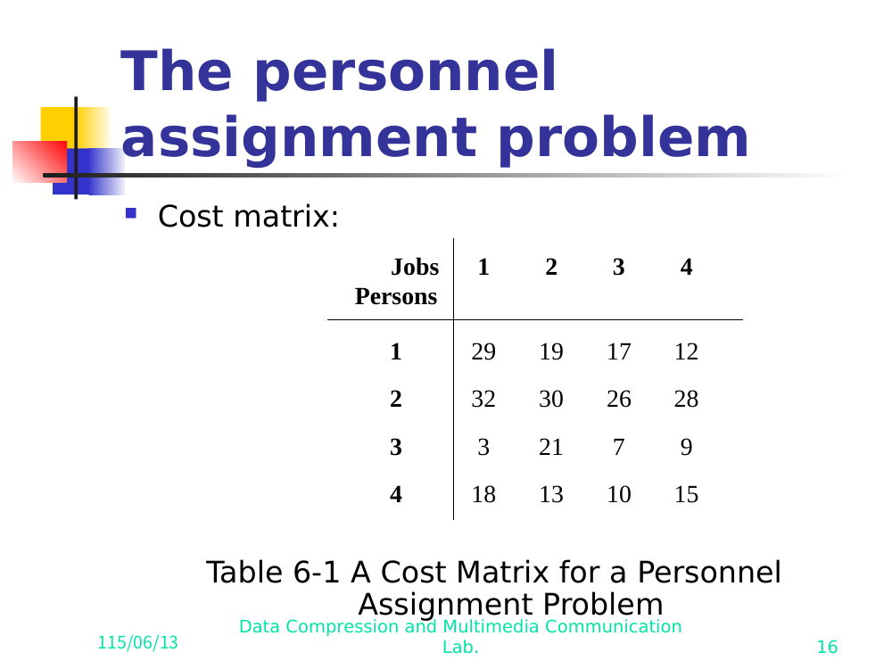
| Person \ Job人 \ 工作 | 1 | 2 | 3 | 4 |
|---|---|---|---|---|
| P1 | 29 | 19 | 17 | 12 |
| P2 | 32 | 30 | 26 | 28 |
| P3 | 3 | 21 | 7 | 9 |
| P4 | 18 | 13 | 10 | 15 |
✅ Verified against slide 16: the P3 row reads C₃₁ = 3, C₃₂ = 21, C₃₃ = 7, C₃₄ = 9 exactly (single-digit
3in column 1, clearly distinct). All other cells match the table above.✅ 對照投影片 16：P3 那一列是 C₃₁ = 3, C₃₂ = 21, C₃₃ = 7, C₃₄ = 9（第一欄是個位數的3，清楚可辨）。其他格子都跟上面這張表一致。
Reduction rule: subtract a constant from each row and each column so that each row and each column contains at least one zero. The total subtracted is a lower bound on the optimal assignment cost.Reduction 規則：每一列、每一欄各減掉一個常數，讓每一列每一欄都至少有一個 0。總共減掉的量，就是最佳指派成本的一個 lower bound。
Table 6-2 — A Reduced Cost Matrix:Table 6-2 — A Reduced Cost Matrix：
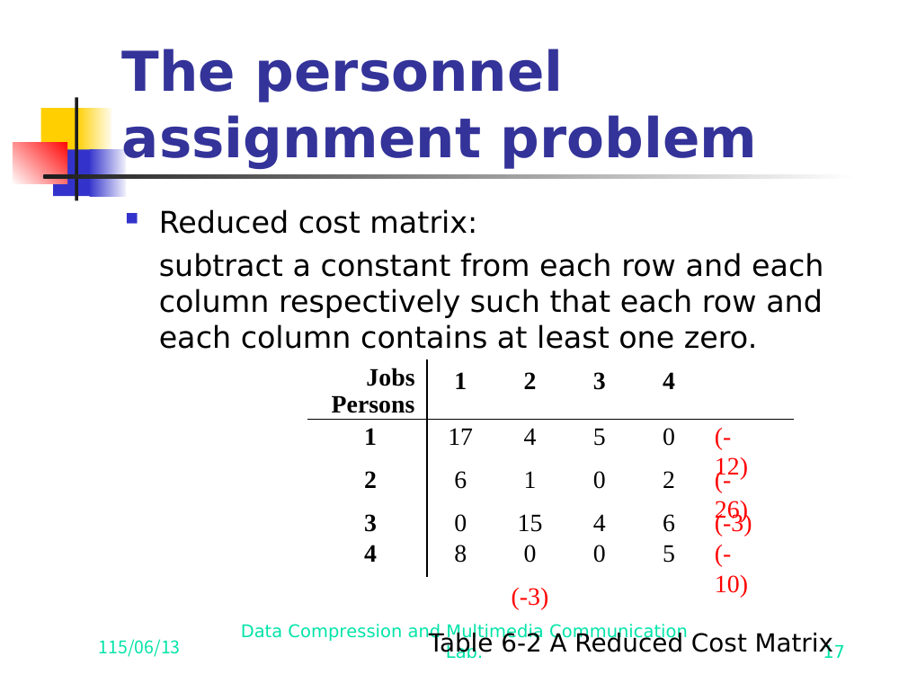
| Person \ Job人 \ 工作 | 1 | 2 | 3 | 4 | row reduction列 reduction |
|---|---|---|---|---|---|
| P1 | 17 | 4 | 5 | 0 | (−12) |
| P2 | 6 | 1 | 0 | 2 | (−26) |
| P3 | 0 | 15 | 4 | 6 | (−3) |
| P4 | 8 | 0 | 0 | 5 | (−10) |
| col reduction欄 reduction | (−3) |
Total cost subtracted: 12 + 26 + 3 + 10 + 3 = 54. This is a lower bound of our solution.總共減掉的成本：12 + 26 + 3 + 10 + 3 = 54。 這就是我們解的一個 lower bound。
✅ Verified against slides 17 & 18: Table 6-2 cells and the red row-reduction tags
(−12)(−26)(−3)(−10)plus the column-2 reduction(−3)are exactly as printed; slide 18 states "Total cost subtracted: 12+26+3+10+3 = 54" and "This is a lower bound of our solution."✅ 對照投影片 17 跟 18：Table 6-2 的格子、紅色的列 reduction 標籤(−12)(−26)(−3)(−10)加上第 2 欄的(−3)，都跟投影片印的一模一樣；投影片 18 寫著「Total cost subtracted: 12+26+3+10+3 = 54」跟「This is a lower bound of our solution」。
✅ Verified against slides 19–21 — the numeric trees are now transcribed (see Appendix A entries "Personnel — Solution Tree (slide 19)", "Personnel — Best-First Search Tree (slide 20)", "Personnel — Bounding of Subsolutions (slide 21)"). Slide 20 is annotated "Only one node is pruned away." The bounding tree on slide 21 follows the spine
0(54) → 2(58) → 1(64) → {3(68)→4(73), 4(70)→3(70)}, i.e. the optimal feasible assignment costs 70.✅ 對照投影片 19–21 —— 帶數字的那幾棵樹現在都抄下來了（看附錄 A 的「Personnel — Solution Tree (slide 19)」、「Personnel — Best-First Search Tree (slide 20)」、「Personnel — Bounding of Subsolutions (slide 21)」）。投影片 20 標了 「Only one node is pruned away.」。投影片 21 的 bounding 樹主幹是0(54) → 2(58) → 1(64) → {3(68)→4(73), 4(70)→3(70)}，也就是說最佳可行指派的成本是 70。
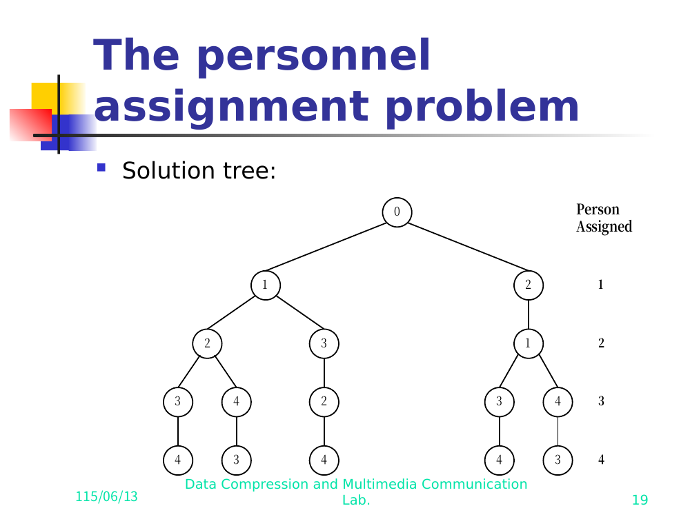
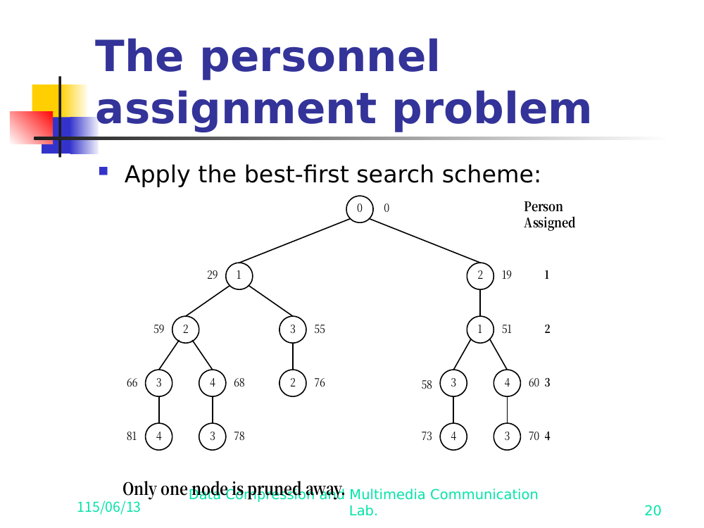
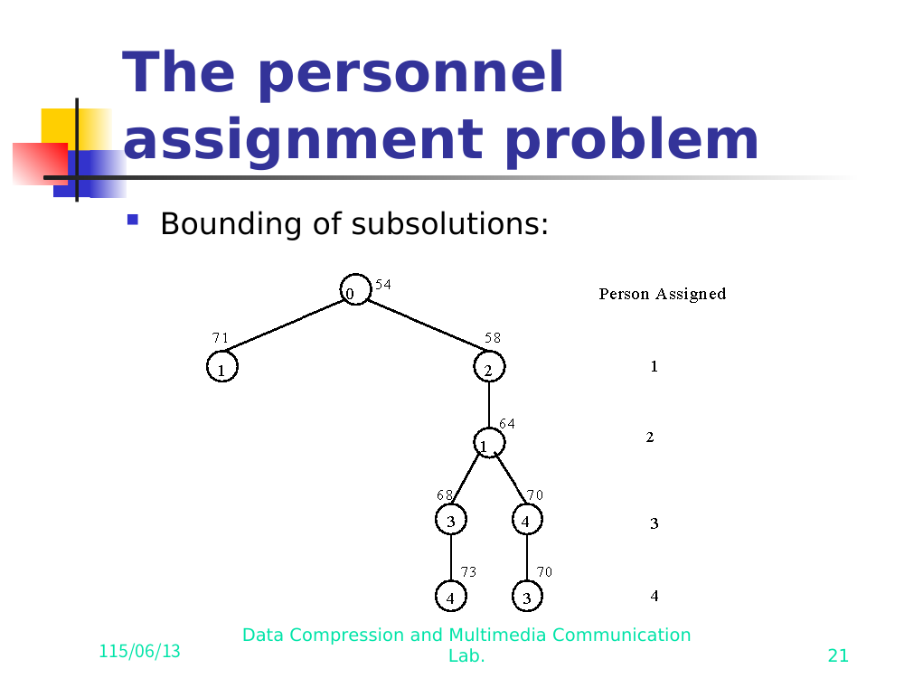
Find a minimum-cost tour visiting every city exactly once and returning to the start. It is NP-complete.要找一條成本最小的 tour，把每個城市剛好走過一次，最後再回到起點。這題是 NP-complete。
Table 6-3 — A Cost Matrix for a Traveling Salesperson Problem (7 cities; ∞ on the diagonal = no self-loop). Entry (i, j) = cost of arc i → j:Table 6-3 — A Cost Matrix for a Traveling Salesperson Problem（7 個城市；對角線上的 ∞ 代表沒有 self-loop）。第 (i, j) 格 = arc i → j 的成本：
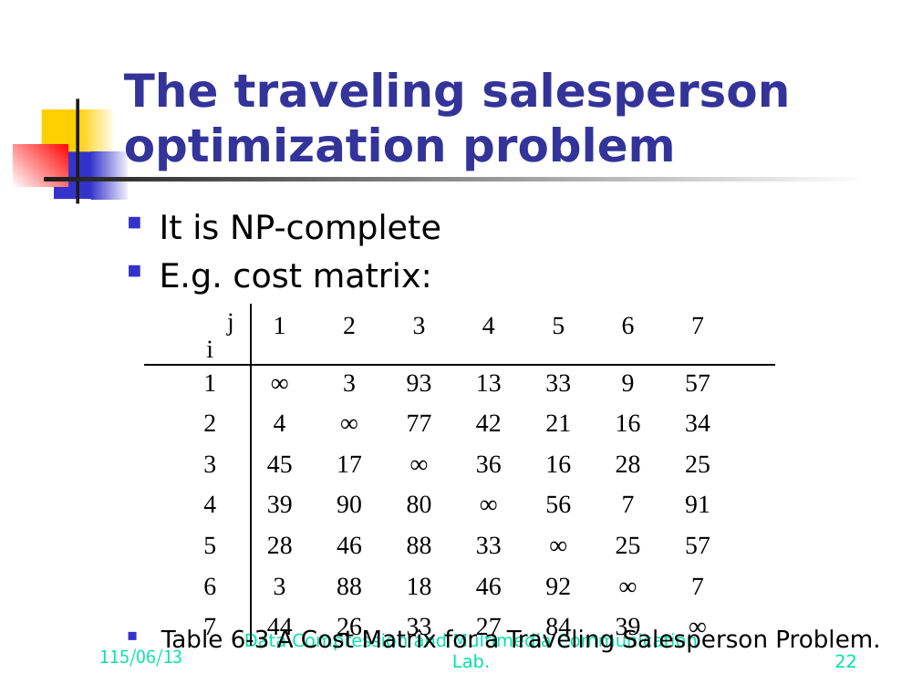
| i \ j | 1 | 2 | 3 | 4 | 5 | 6 | 7 |
|---|---|---|---|---|---|---|---|
| 1 | ∞ | 3 | 93 | 13 | 33 | 9 | 57 |
| 2 | 4 | ∞ | 77 | 42 | 21 | 16 | 34 |
| 3 | 45 | 17 | ∞ | 36 | 16 | 28 | 25 |
| 4 | 39 | 90 | 80 | ∞ | 56 | 7 | 91 |
| 5 | 28 | 46 | 88 | 33 | ∞ | 25 | 57 |
| 6 | 3 | 88 | 18 | 46 | 92 | ∞ | 7 |
| 7 | 44 | 26 | 33 | 27 | 84 | 39 | ∞ |
Subtract the row minimum from each row (so each row has a zero):每一列各減掉該列的最小值（讓每一列都有一個 0）：
Table 6-4 — A Reduced Cost Matrix:Table 6-4 — A Reduced Cost Matrix：
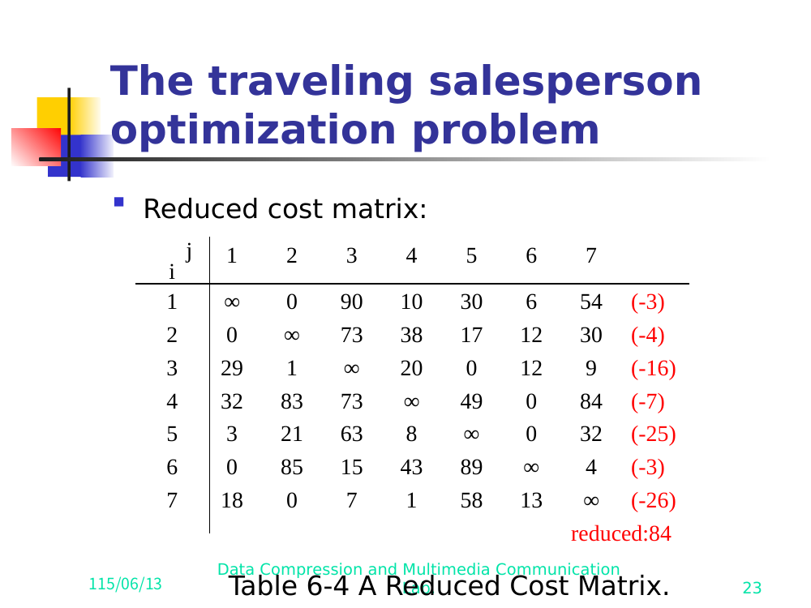
| i \ j | 1 | 2 | 3 | 4 | 5 | 6 | 7 | row reduction列 reduction |
|---|---|---|---|---|---|---|---|---|
| 1 | ∞ | 0 | 90 | 10 | 30 | 6 | 54 | (−3) |
| 2 | 0 | ∞ | 73 | 38 | 17 | 12 | 30 | (−4) |
| 3 | 29 | 1 | ∞ | 20 | 0 | 12 | 9 | (−16) |
| 4 | 32 | 83 | 73 | ∞ | 49 | 0 | 84 | (−7) |
| 5 | 3 | 21 | 63 | 8 | ∞ | 0 | 32 | (−25) |
| 6 | 0 | 85 | 15 | 43 | 89 | ∞ | 4 | (−3) |
| 7 | 18 | 0 | 7 | 1 | 58 | 13 | ∞ | (−26) |
Sum of row reductions: reduced: 84 (= 3+4+16+7+25+3+26 = 84).列 reduction 總和：reduced: 84（= 3+4+16+7+25+3+26 = 84）。
✅ Verified against slides 22 (Table 6-3) and 23 (Table 6-4): every cell and the red
(−3)(−4)(−16)(−7)(−25)(−3)(−26)row tags and "reduced:84" match exactly.✅ 對照投影片 22（Table 6-3）跟 23（Table 6-4）：每一格、紅色的列標籤(−3)(−4)(−16)(−7)(−25)(−3)(−26)還有「reduced:84」都完全吻合。
Now subtract column minimums from columns that still lack a zero:接著，對那些還沒有 0 的欄，各減掉該欄的最小值：
Table 6-5 — Another Reduced Cost Matrix:Table 6-5 — Another Reduced Cost Matrix：
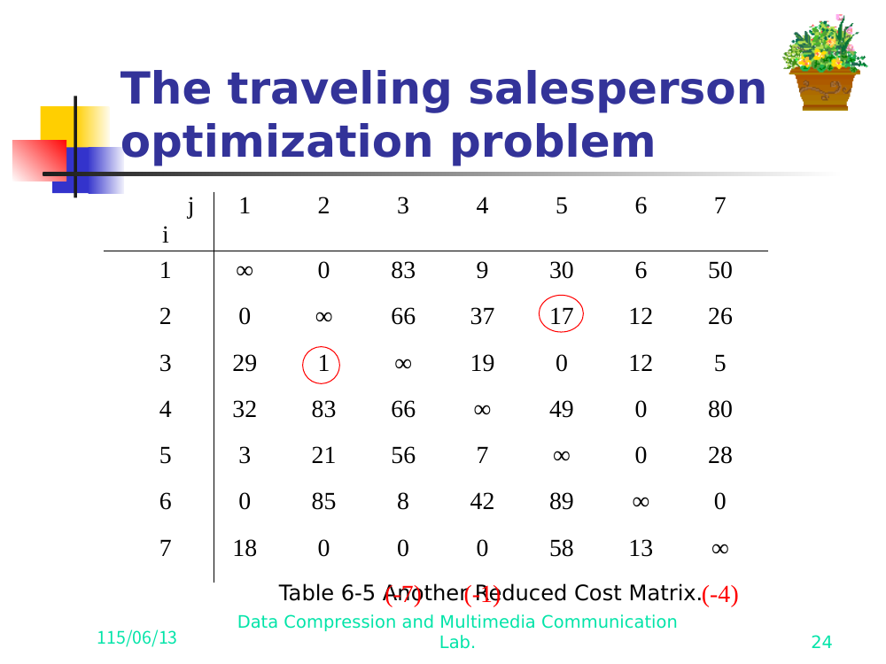
| i \ j | 1 | 2 | 3 | 4 | 5 | 6 | 7 |
|---|---|---|---|---|---|---|---|
| 1 | ∞ | 0 | 83 | 9 | 30 | 6 | 50 |
| 2 | 0 | ∞ | 66 | 37 | 17 | 12 | 26 |
| 3 | 29 | 1 | ∞ | 19 | 0 | 12 | 5 |
| 4 | 32 | 83 | 66 | ∞ | 49 | 0 | 80 |
| 5 | 3 | 21 | 56 | 7 | ∞ | 0 | 28 |
| 6 | 0 | 85 | 8 | 42 | 89 | ∞ | 0 |
| 7 | 18 | 0 | 0 | 0 | 58 | 13 | ∞ |
| col reduction欄 reduction | (−7) | (−1) | (−4) |
Column reductions: column 3 (−7), column 4 (−1), column 7 (−4).欄 reduction：第 3 欄 (−7)、第 4 欄 (−1)、第 7 欄 (−4)。
Total cost reduced: 84 + 7 + 1 + 4 = 96 (lower bound).總共 reduce 掉的成本：84 + 7 + 1 + 4 = 96（lower bound）。
✅ Verified against slide 24 (Table 6-5): all cells match; the column reductions
(−7)(−1)(−4)sit under columns 3, 4, 7. Slide circles the cells17(row 2, col 5) and1(row 3, col 2). Slide 25 states "Total cost reduced: 84+7+1+4 = 96 (lower bound)."✅ 對照投影片 24（Table 6-5）：所有格子都吻合；欄 reduction(−7)(−1)(−4)分別在第 3、4、7 欄底下。投影片把17（第 2 列第 5 欄）跟1（第 3 列第 2 欄）兩格圈了起來。投影片 25 寫著「Total cost reduced: 84+7+1+4 = 96 (lower bound)」。
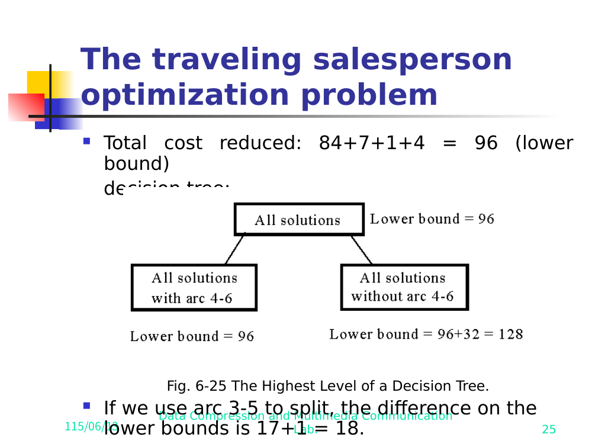
✅ Verified against slide 25: arc 4-6 is the splitting arc (penalty 32, giving the 96/128 split shown in Fig. 6-25); the 3-5 alternative would only give penalty 18. The "with 4-6" subtree (LB still 96) is expanded next via Tables 6-6/6-7.✅ 對照投影片 25：分裂用的 arc 是 4-6（懲罰 32，對應 Fig. 6-25 的 96/128 分裂）；用 3-5 的話懲罰只有 18。「with 4-6」這棵 subtree（LB 還是 96）接著用 Table 6-6／6-7 展開。
(6,4) = ∞ (to forbid the premature subtour 4→6→4). ✅ Verified against slide 26 (columns 1,2,3,4,5,7; the (6,4)=∞ cell is circled on the slide):Table 6-6 — A Reduced Cost Matrix if Arc 4-6 is Included. 把 arc 4→6 納進來，意思就是刪掉第 4 列跟第 6 欄，並把 (6,4) 那格設成 ∞（避免提早形成 4→6→4 這種小迴圈 subtour）。✅ 對照投影片 26（欄位 1,2,3,4,5,7；(6,4)=∞ 那格在投影片上被圈起來）：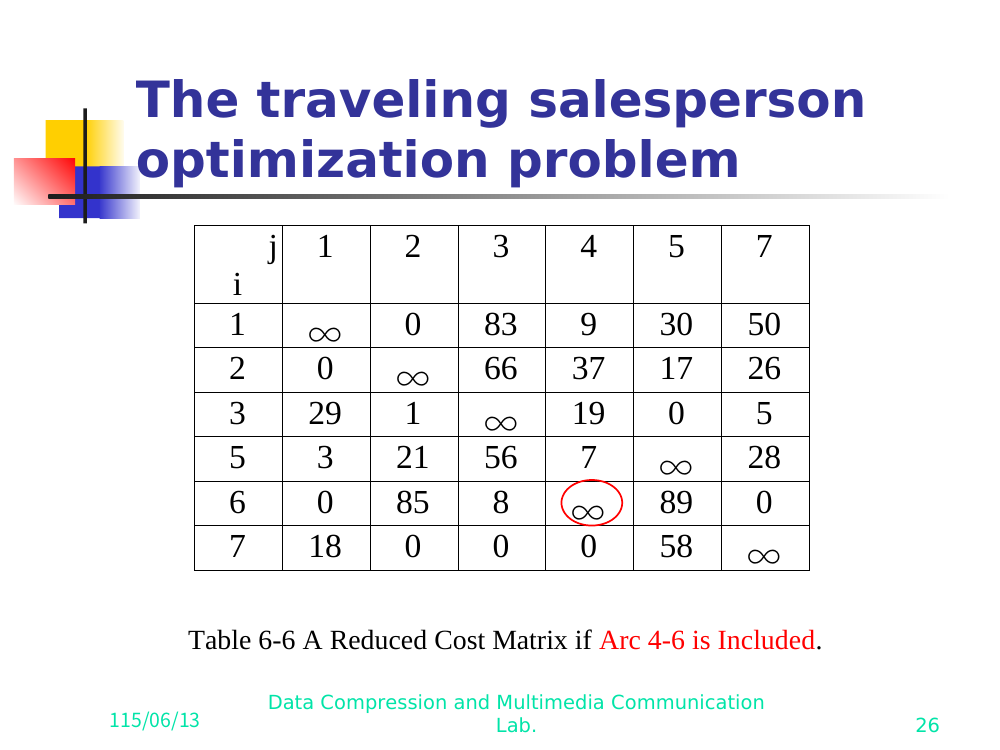
| i \ j | 1 | 2 | 3 | 4 | 5 | 7 |
|---|---|---|---|---|---|---|
| 1 | ∞ | 0 | 83 | 9 | 30 | 50 |
| 2 | 0 | ∞ | 66 | 37 | 17 | 26 |
| 3 | 29 | 1 | ∞ | 19 | 0 | 5 |
| 5 | 3 | 21 | 56 | 7 | ∞ | 28 |
| 6 | 0 | 85 | 8 | ∞ | 89 | 0 |
| 7 | 18 | 0 | 0 | 0 | 58 | ∞ |
(Note: in Table 6-6 row 5 is still 3,21,56,7,∞,28 — not yet reduced. Reducing row 5 by its minimum 3 gives Table 6-7.)（注意：Table 6-6 的第 5 列還是 3,21,56,7,∞,28 —— 還沒 reduce。把第 5 列減掉它的最小值 3，就得到 Table 6-7。）
Table 6-7 — A Reduced Cost Matrix for that in Table 6-6 (rows/cols 4 and 6 removed; row 5 further reduced by −3). ✅ Verified cell-by-cell against slide 27:Table 6-7 — A Reduced Cost Matrix for that in Table 6-6（第 4 列／欄、第 6 列／欄已移除；第 5 列再 reduce 掉 −3）。✅ 對照投影片 27 逐格確認：
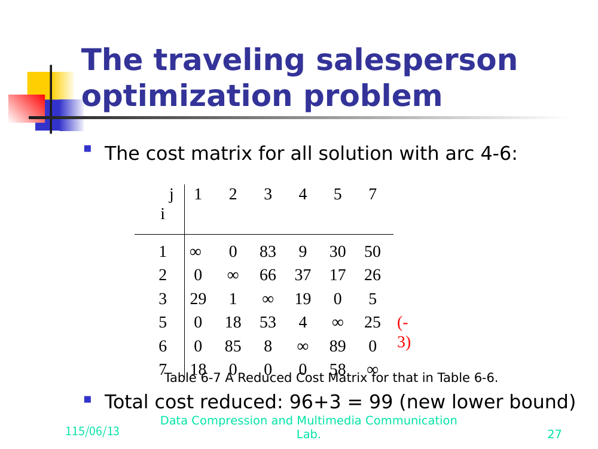
| i \ j | 1 | 2 | 3 | 4 | 5 | 7 | reductionreduction |
|---|---|---|---|---|---|---|---|
| 1 | ∞ | 0 | 83 | 9 | 30 | 50 | |
| 2 | 0 | ∞ | 66 | 37 | 17 | 26 | |
| 3 | 29 | 1 | ∞ | 19 | 0 | 5 | |
| 5 | 0 | 18 | 53 | 4 | ∞ | 25 | (−3) |
| 6 | 0 | 85 | 8 | ∞ | 89 | 0 | |
| 7 | 18 | 0 | 0 | 0 | 58 | ∞ |
Row 5 here carries an extra reduction (−3).這裡第 5 列多扣了一個 (−3)。
Total cost reduced: 96 + 3 = 99 (new lower bound) for the subtree where arc 4-6 is included.對「納入 arc 4-6」這棵 subtree 來說，總共 reduce 掉的成本：96 + 3 = 99（新的 lower bound）。
✅ Verified against slides 26 (Table 6-6) and 27 (Table 6-7): every cell confirmed. Slide 27 prints "Total cost reduced: 96+3 = 99 (new lower bound)."✅ 對照投影片 26（Table 6-6）跟 27（Table 6-7）：每一格都確認過。投影片 27 印著「Total cost reduced: 96+3 = 99 (new lower bound)」。
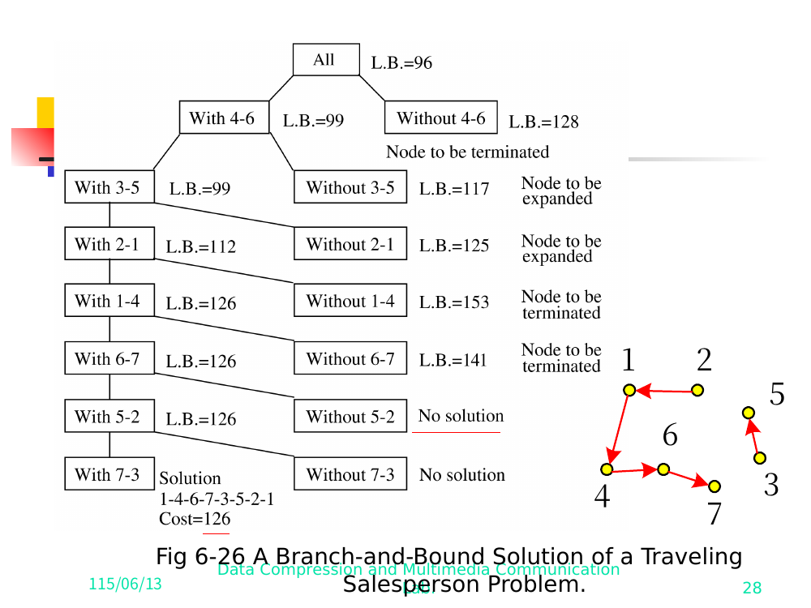
✅ Verified against slide 28 (Fig. 6-26): the full B&B tree is transcribed. Spine bounds: All=96, With/Without 4-6 = 99/128, With/Without 3-5 = 99/117, With/Without 2-1 = 112/125, With/Without 1-4 = 126/153, With/Without 6-7 = 126/141, With/Without 5-2 = 126/(no soln), With/Without 7-3 = Solution/(no soln). Optimal tour
1-4-6-7-3-5-2-1, Cost = 126. Slide 28 also draws the tour itself (arrows 1→4→6→7→3→5→2→1 over the 7 city dots).✅ 對照投影片 28（Fig. 6-26）：整棵 B&B 樹都抄下來了。主幹的 bound：All=96，With/Without 4-6 = 99/128，With/Without 3-5 = 99/117，With/Without 2-1 = 112/125，With/Without 1-4 = 126/153，With/Without 6-7 = 126/141，With/Without 5-2 = 126/(無解)，With/Without 7-3 = Solution/(無解)。最佳 tour1-4-6-7-3-5-2-1，Cost = 126。投影片 28 還把這條 tour 本身畫出來（在 7 個城市點上用箭頭 1→4→6→7→3→5→2→1 串起來）。
P₁, P₂, …, Pₙ; weights W₁, W₂, …, Wₙ; capacity M.一堆正整數：利潤 P₁, P₂, …, Pₙ；重量 W₁, W₂, …, Wₙ；容量 M。Xᵢ ∈ {0, 1} to maximize Σ PᵢXᵢ subject to Σ WᵢXᵢ ≤ M.選 Xᵢ ∈ {0, 1}，在 Σ WᵢXᵢ ≤ M 的限制下，最大化 Σ PᵢXᵢ。−Σ PᵢXᵢ.投影片改成最小化負的利潤（這樣就變成一個最小化的 B&B）：目標值是 −Σ PᵢXᵢ。i branch on Xᵢ = 1 (include item i) vs Xᵢ = 0 (exclude it).Fig. 6-27 — The Branching Mechanism in the Branch-and-Bound Strategy to Solve 0/1 Knapsack Problem. 在第 i 層做分支：Xᵢ = 1（放入第 i 個物品）對上 Xᵢ = 0（不放）。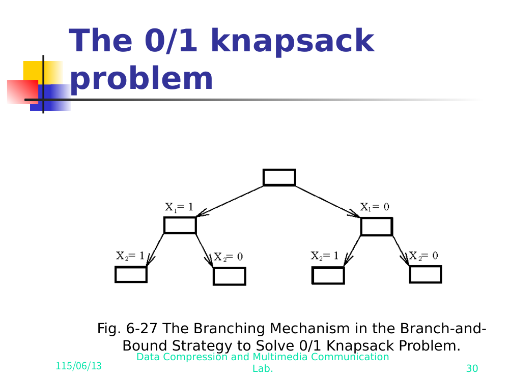
n = 6, M = 34範例資料 —— n = 6, M = 34Items are sorted by profit density so that Pᵢ/Wᵢ ≥ Pᵢ₊₁/Wᵢ₊₁:物品先依 profit density 排序，讓 Pᵢ/Wᵢ ≥ Pᵢ₊₁/Wᵢ₊₁：
| i | 1 | 2 | 3 | 4 | 5 | 6 |
|---|---|---|---|---|---|---|
| Pᵢ | 6 | 10 | 4 | 5 | 6 | 4 |
| Wᵢ | 10 | 19 | 8 | 10 | 12 | 8 |
| Pᵢ/Wᵢ | 0.60 | 0.53 | 0.50 | 0.50 | 0.50 | 0.50 |
Property: (Pᵢ/Wᵢ ≥ Pᵢ₊₁/Wᵢ₊₁) — items in non-increasing density order, which the greedy bound relies on.性質：(Pᵢ/Wᵢ ≥ Pᵢ₊₁/Wᵢ₊₁) —— 物品照 density 由大到小排，這正是 greedy bound 仰賴的前提。
✅ Verified against slide 31: data
Pᵢ = 6,10,4,5,6,4andWᵢ = 10,19,8,10,12,8(n=6, M=34) and the ordering claim(Pᵢ/Wᵢ ≥ Pᵢ₊₁/Wᵢ₊₁)are exactly as printed. (Densities are not numerically tabulated on the slide; the 0.60/0.53/0.50… values above are computed here.) The feasible solutionX1=X2=1, rest 0giving upper bound−(P1+P2) = −16is on slide 31; "Any solution higher than −16 cannot be an optimal solution" is verbatim.✅ 對照投影片 31：資料Pᵢ = 6,10,4,5,6,4、Wᵢ = 10,19,8,10,12,8（n=6, M=34）跟排序宣稱(Pᵢ/Wᵢ ≥ Pᵢ₊₁/Wᵢ₊₁)都跟投影片印的一致。（density 的數值投影片沒列；上面的 0.60/0.53/0.50… 是這裡自己算的。）可行解X1=X2=1, 其餘 0給出 upper bound−(P1+P2) = −16在投影片 31；「Any solution higher than −16 cannot be an optimal solution」是原文照抄。
A quick feasible solution gives an upper bound on the (negated) objective:隨手找一個可行解，就能給（取負後的）目標一個 upper bound：
X1 = 1, X2 = 1, X3 = 0, X4 = 0, X5 = 0, X6 = 0
weight used = W1 + W2 = 10 + 19 = 29 ≤ 34 ✓
objective = −(P1 + P2) = −16 (upper bound)
Any solution higher than −16 cannot be an optimal solution (we are minimizing the negative profit, i.e. we will not accept anything worse than −16).任何比 −16 還大的解都不可能是最佳解（因為我們在最小化負利潤，也就是說比 −16 還差的都不收）。
Relax the restriction from Xᵢ = 0 or 1 to 0 ≤ Xᵢ ≤ 1 — this is the (fractional) knapsack problem, solvable optimally by the greedy method (fill by decreasing density until capacity runs out, taking a fraction of the last item):把限制從 Xᵢ = 0 或 1 放寬成 0 ≤ Xᵢ ≤ 1 —— 這就是（分數版）knapsack problem，可以用 greedy 法直接解到最佳（照 density 由大到小一直塞，塞到容量用完，最後一個物品就拿一部分）：
X1 = 1, X2 = 1, X3 = 5/8, X4 = 0, X5 = 0, X6 = 0
weight = 10 + 19 + (5/8)(8) = 10 + 19 + 5 = 34 = M ✓ (capacity exactly full)
objective = −(P1 + P2 + (5/8)P3) = −(6 + 10 + 2.5) = −18.5 (lower bound)
Since the true 0/1 objective must be an integer, the lower bound rounds to −18 (only integer solutions count).因為真正的 0/1 目標值一定是整數，所以這個 lower bound 進位成 −18（只有整數解算數）。
Therefore:所以：
−18 ≤ optimal solution ≤ −16
After completing the branch-and-bound search:跑完整個 branch-and-bound 搜尋之後：
optimal solution: X1 = 1, X2 = 0, X3 = 0, X4 = 1, X5 = 1, X6 = 0
weight = W1 + W4 + W5 = 10 + 10 + 12 = 32 ≤ 34 ✓
objective = −(P1 + P4 + P5) = −(6 + 5 + 6) = −17
This −17 lies inside [−18, −16], consistent with the bounds.這個 −17 落在 [−18, −16] 裡面，跟前面算的 bound 對得起來。
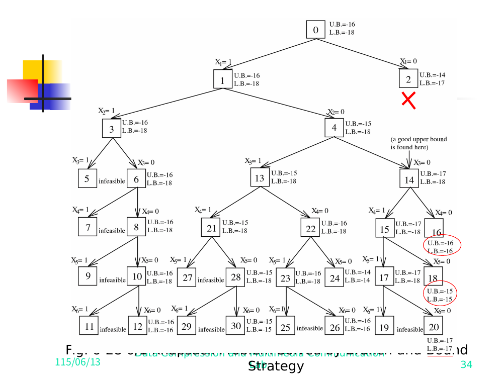
✅ Verified against slide 34 (Fig. 6-28): all per-node U.B./L.B. values for nodes 0–30 are transcribed. Root node 0 = (U.B. −16, L.B. −18); node 14 is annotated "(a good upper bound is found here)" with U.B.=−17; the optimal −17 is reached on the X1=0 (node 14) sub-branch (nodes 15/16/17/18/20 circled in red on the slide). Slides 32–33 confirm the fractional-relaxation lower bound:
X3 = 5/8,−(P1+P2+⅝P3) = −18.5→ rounded−18, so−18 ≤ optimal ≤ −16, and optimalX1=1,X4=1,X5=1(rest 0) →−(P1+P4+P5) = −17. The weight sums (29, 34, 32) are computed here from the data.✅ 對照投影片 34（Fig. 6-28）：節點 0–30 每個的 U.B./L.B. 值都抄下來了。Root node 0 = (U.B. −16, L.B. −18)；node 14 標了「(a good upper bound is found here)」，U.B.=−17；最佳值 −17 是在 X1=0（node 14）這條子分支上達成的（投影片上把 node 15/16/17/18/20 圈成紅色）。投影片 32–33 確認了 fractional-relaxation 的 lower bound：X3 = 5/8、−(P1+P2+⅝P3) = −18.5→ 進位成−18，所以−18 ≤ optimal ≤ −16，最佳解X1=1,X4=1,X5=1（其餘 0）→−(P1+P4+P5) = −17。重量總和（29, 34, 32）是這裡依資料自己算的。
A* is used to solve optimization problems with the best-first strategy, but with a special cost function that guarantees optimality. If a feasible solution (goal node) is obtained, then it is optimal and we can stop.A* 是拿 best-first 策略來解 optimization 問題，但配上一個特別的 cost function 來保證最佳性。只要拿到一個可行解（goal node），它就一定是最佳的，可以直接停。
For each node n:對每個節點 n：
f(n) = g(n) + h(n)
g(n): actual cost from the root to node n.
h(n): estimated cost from node n to a goal node.
h*(n): the "real" (true minimum) cost from node n to a goal node.
Admissibility condition: the heuristic must never overestimate:Admissibility 條件：heuristic 絕對不能高估：
h(n) ≤ h*(n)
⇒ f(n) = g(n) + h(n) ≤ g(n) + h*(n) = f*(n)
i.e. f(n) is a lower bound on the best total cost of any solution through n. This is what makes the first goal reached optimal.也就是說 f(n) 是「任何經過 n 的解，其最佳總成本」的一個 lower bound。正是這點，讓第一個碰到的 goal 就是最佳的。
Stop iff the selected (expanded) node is also a goal node. (Reaching a goal node in the list is not enough — it must be the node with the smallest f, i.e. the one selected for expansion.)當且僅當你選中（要展開）的那個節點剛好也是 goal node，才停。（光是 list 裡出現一個 goal node 還不夠 —— 它必須是 f 最小、被挑出來要展開的那個。）
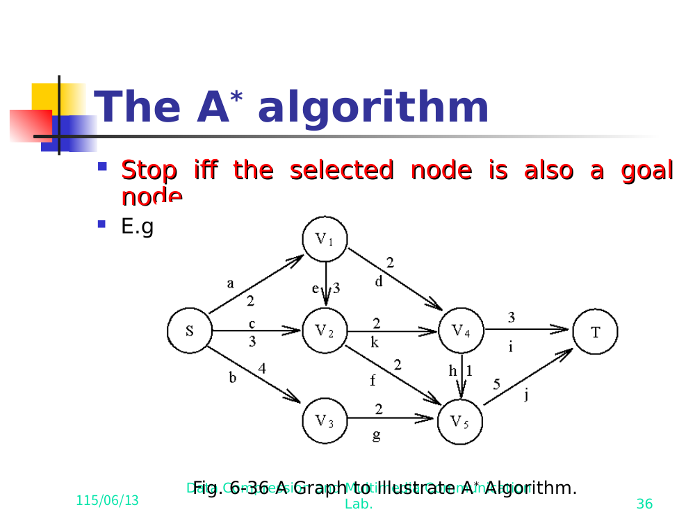
S→V₁..V₅→T; see Appendix A for the literal Fig. 6-36 graph). The A* search tree is built on it across slides 37–42, with the underlying graph relabeled R, A, B, C, D, E, F, G, H, I, J, K, L. The slides walk the expansion order with full g/h/f bookkeeping:Fig. 6-36 — A Graph to Illustrate A* Algorithm（投影片 36）。這是搜尋的圖（不是樹 —— 它是分層圖 S→V₁..V₅→T；Fig. 6-36 原圖看附錄 A）。A* 搜尋樹就建在它上面，橫跨投影片 37–42，底層的圖被重新標成 R, A, B, C, D, E, F, G, H, I, J, K, L。投影片帶你走過整個展開順序，並完整記下每步的 g/h/f：| Step (slide)步驟（投影片） | Action動作 | New g/h/f values shown新出現的 g/h/f 值 |
|---|---|---|
| 1 (37) | Form list with root R; children A,B,C建一個含 root R 的 list；小孩有 A,B,C | A(g2,h2,f4), B(g4,h2,f6), C(g3,h2,f5) |
| 2 (38) | Expand A (smallest f=4)展開 A（f=4 最小） | D(g4,h1,f5), E(g5,h2,f7) |
| 3 (39) | Expand C (f=5)展開 C（f=5） | F(g5,h1,f6), G(g5,h5,f10) |
| 4 (40) | Expand D (f=5)展開 D（f=5） | H(g5,h5,f10), I(g7,h0,f7) |
| 5 (41) | Expand B (f=6)展開 B（f=6） | J(g6,h5,f11) |
| 6 (42) | Expand F (f=6)展開 F（f=6） | K(g6,h5,f11), L(g8,h0,f8) |
After step 6, the smallest-f open node is I (f = 7), and I is the goal node → stop, optimal.走完第 6 步，還沒展開的節點裡 f 最小的是 I（f = 7），而 I 就是 goal node → 停，已經是最佳解。
✅ Verified against slides 36–42: edges
R→A(a,2), R→B(b,4), R→C(c,3), A→D(d,2), A→E(e,3), C→F(k,2), C→G(f,2), D→H(h,1), D→I(i,3), B→J(g,2), F→K(h,1), F→L(l,3)and allg/h/fvalues as tabulated. Correction: the goal node is I, not F (slide 42 prints "I is a goal node !"); F is merely the last node expanded. Expansion order: A → C → D → B → F, terminating by selecting goal I.✅ 對照投影片 36–42：邊R→A(a,2), R→B(b,4), R→C(c,3), A→D(d,2), A→E(e,3), C→F(k,2), C→G(f,2), D→H(h,1), D→I(i,3), B→J(g,2), F→K(h,1), F→L(l,3)跟上表所有g/h/f值都對得上。更正：goal node 是 I，不是 F（投影片 42 印「I is a goal node !」）；F 只是最後一個被展開的節點。展開順序：A → C → D → B → F，最後挑中 goal I 而結束。
In VLSI layout, a channel is a rectangular region with terminals (pins) on its top and bottom edges. Each net connects a set of terminals. Wires run in horizontal tracks (and vertical segments). Goal: find a routing that minimizes the number of tracks. This problem is NP-complete.在 VLSI 佈線裡，channel 是一塊長方形區域，上下兩邊都有一排 terminal（接腳）。每個 net 要把一組 terminal 接在一起。線會走在水平的 track（軌道）上，外加一些垂直段。目標：找一個 routing，讓用到的 track 數最少。這題是 NP-complete。
0 = no terminal):Fig. 6-40 — A Channel Specification（投影片 43）。✅ 已確認。13 個欄；terminal 上的數字代表 net 編號（0 = 沒有 terminal）：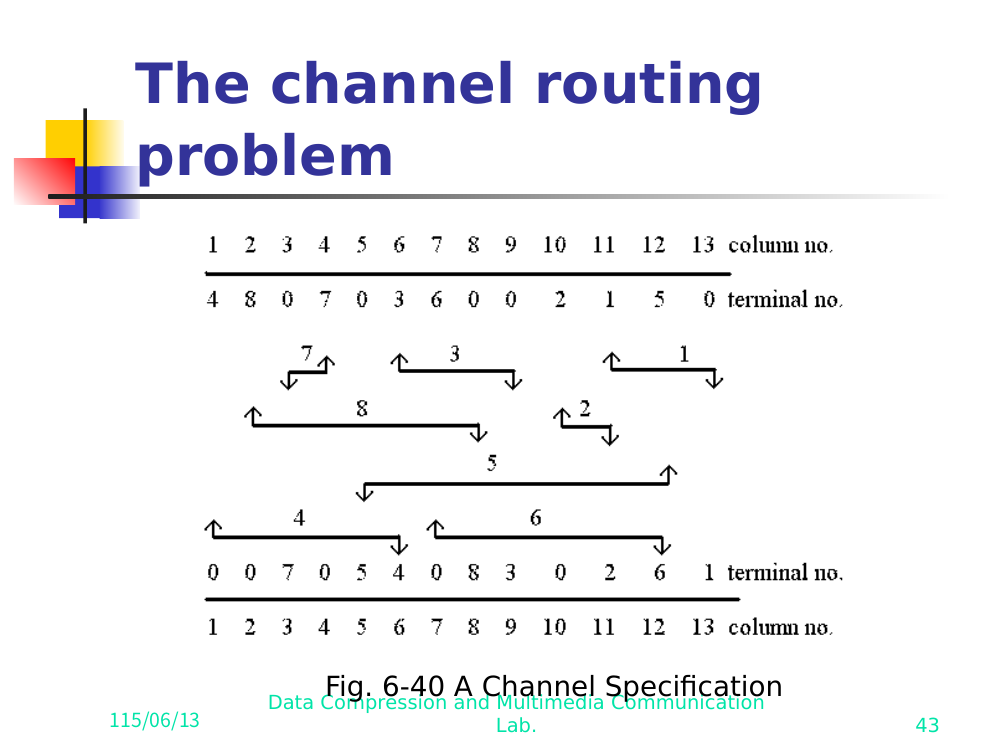
4, 8, 0, 7, 0, 3, 6, 0, 0, 2, 1, 5, 0上排（欄 1→13）：4, 8, 0, 7, 0, 3, 6, 0, 0, 2, 1, 5, 00, 0, 7, 0, 5, 4, 0, 8, 3, 0, 2, 6, 1下排（欄 1→13）：0, 0, 7, 0, 5, 4, 0, 8, 3, 0, 2, 6, 1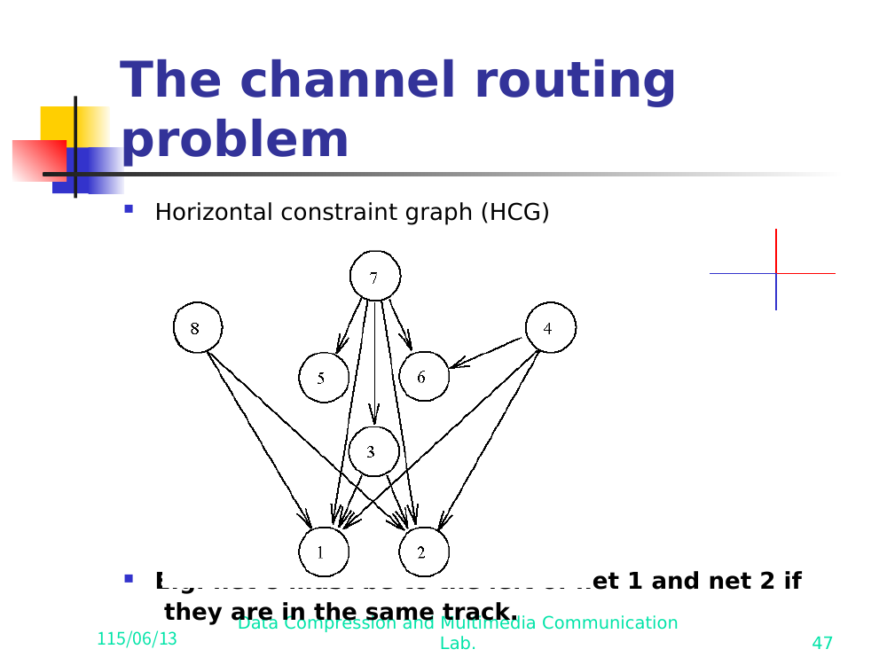
投影片上的一條排序規則範例（投影片 47）：「net 8 must be to the left of net 1 and net 2 if they are in the same track.」7→5, 7→6, 7→3, 7→1, 7→2, 8→1, 8→2, 4→6, 4→1, 4→2, 3→1, 3→2. (This is the directed graph the earlier note recorded as the uncaptioned png_014 "personnel/VCG ordering graph" — it is in fact the channel-routing HCG.)Fig. 6-41 (HCG)，投影片 47 — ✅ 已確認的有向邊（箭尾 = 必須在箭頭左邊）：7→5, 7→6, 7→3, 7→1, 7→2、8→1, 8→2、4→6, 4→1, 4→2、3→1, 3→2。（這就是之前筆記記成沒標題的 png_014「personnel/VCG ordering graph」那張有向圖 —— 其實它是 channel-routing 的 HCG。）{1,8}, {1,3,7}, {5,7}. Each maximal clique can be assigned to a track. ✅ Verified verbatim on slide 48. (A clique = a set of nets that mutually conflict; the cliques bound how many nets pile up at one horizontal position = the local density.)HCG 裡的 maximal cliques：{1,8}、{1,3,7}、{5,7}。每個 maximal clique 都可以指派給一條 track。✅ 對照投影片 48 逐字確認。（一個 clique = 一組互相衝突的 net；這些 clique 決定了同一個水平位置最多會疊幾個 net = local density。）1→2, 3→4, 5→6 (three disjoint edges; nets 7 and 8 are isolated VCG nodes). The slide annotates "e.g. net 3 must be wired before net 4."VCG（投影片 48） — ✅ 已確認的邊：1→2、3→4、5→6（三條彼此不相連的邊；net 7 跟 8 在 VCG 裡是孤立節點）。投影片標了 「e.g. net 3 must be wired before net 4.」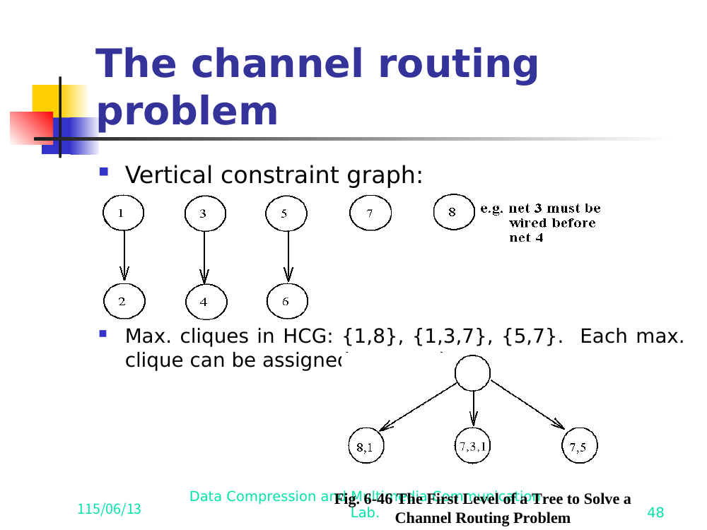
✅ Verified against slide 48: the VCG is exactly the three edges 1→2, 3→4, 5→6.✅ 對照投影片 48：VCG 就是 1→2、3→4、5→6 這三條邊。
{8,1}, {7,3,1}, {7,5} (one per candidate first track). (Pictured on slide 48, shown above with the VCG.)Fig. 6-46 — The First Level of a Tree to Solve a Channel Routing Problem（投影片 48）。✅ 已確認：root 分出三個小孩 = 三個 maximal clique：{8,1}、{7,3,1}、{7,5}（每個對應第一條 track 的一種候選）。（畫在投影片 48，上面跟 VCG 一起顯示。）f(n) = g(n) + h(n)
g(n): the level of the tree (= number of tracks used so far)
h(n): maximal local density (a lower bound on tracks still needed)
Since h(n) = maximal local density never overestimates the remaining tracks needed, A* finds the minimum-track routing.
- Fig. 6-48 — A Partial Solution Tree for the Channel Routing Problem by Using A* Algorithm (slide 49). ✅ Verified — full tree transcribed in Appendix A. (This is the same tree the earlier note recorded as the uncaptioned png_015 "best-first g+h tree"; it is in fact Fig. 6-48, with node states being net-cliques.)因為 h(n) = maximal local density 永遠不會高估剩下還需要的 track 數，所以 A* 一定能找到 track 數最少的 routing。
- Fig. 6-48 — A Partial Solution Tree for the Channel Routing Problem by Using A* Algorithm（投影片 49）。✅ 已確認 —— 完整的樹抄在附錄 A。（這就是之前筆記記成沒標題的 png_015「best-first g+h tree」那棵；其實它是 Fig. 6-48，節點狀態是 net-clique。）
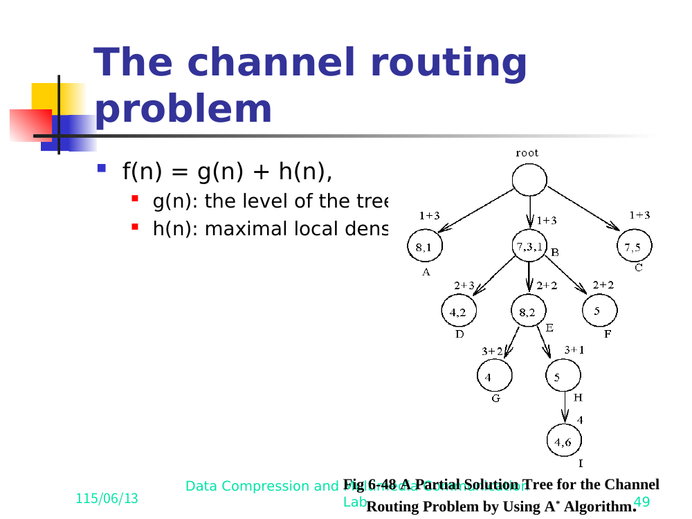
✅ Verified against slides 43–49: Fig. 6-40 channel spec, the HCG (slide 47) and VCG (slide 48) edge lists, the three maximal cliques
{1,8},{1,3,7},{5,7}, the Fig. 6-46 first level, and the Fig. 6-48 A* tree withf=g+h(g = tree level, h = max local density) are all read directly.✅ 對照投影片 43–49：Fig. 6-40 的 channel 規格、HCG（投影片 47）跟 VCG（投影片 48）的邊清單、三個 maximal clique{1,8},{1,3,7},{5,7}、Fig. 6-46 第一層、以及帶f=g+h（g = 樹的層數，h = max local density）的 Fig. 6-48 A* 樹，全都直接讀出來了。
All items below have been checked against the per-slide PNG renders in render/A05full/ (49 slides). Every previously-reconstructed item is now resolved.下面每一項都拿 render/A05full/ 裡逐張的 PNG render（共 49 張投影片）核對過了。之前每個用推測重建的項目，現在都解決了。
-x₁, x₁, x₂∨x₅, x₃, -x₂ (clauses 1–5); both partial-tree children labeled "(1)/(2) falsified"; full 2³ truth table on slide 2. Instance is unsatisfiable. (§1)✅ 對照投影片 3 —— SAT 例子 -x₁, x₁, x₂∨x₅, x₃, -x₂（clause 1–5）；部分樹的兩個子節點都標「(1)/(2) falsified」；完整 2³ truth table 在投影片 2。這個例子無解。(§1)x. (§3)✅ 對照投影片 6 —— Fig. 6-11 DFS 樹；符合的子集合 {7,2}（goal node「9」）；12/10/18 是死路，標 x。(§3)V₀…V₃ multi-stage graph (slide 12, 12 edges) with its best-first B&B tree (slide 13). The S,V₁..V₅,T graph the old note called "Fig. 6-17" is actually Fig. 6-36 (slide 36). (§7)✅ 對照投影片 12 跟 13 —— 更正：Fig. 6-17 是 V₀…V₃ 的 multi-stage graph（投影片 12，12 條邊），配它的 best-first B&B 樹（投影片 13）。舊筆記叫「Fig. 6-17」的那張 S,V₁..V₅,T 圖其實是 Fig. 6-36（投影片 36）。(§7)J1→J3 and J2→J4 (two vertical arrows; no J1→J4 diagonal). (§8)✅ 對照投影片 15 —— 更正：Fig. 6-21 只有 J1→J3 跟 J2→J4（兩條直箭頭；沒有 J1→J4 斜線）。(§8)1-4-6-7-3-5-2-1, Cost = 126. (§9)✅ 對照投影片 28 —— Fig. 6-26 B&B 樹加上所有 bound；最佳 tour 1-4-6-7-3-5-2-1，Cost = 126。(§9)g/h/f across six expansion steps. Correction: the goal node is I (slide 42: "I is a goal node !"), not F; expansion order A→C→D→B→F. (§11)✅ 對照投影片 36–42 —— Fig. 6-36 圖的邊加上六個展開步驟全部的 g/h/f。更正：goal node 是 I（投影片 42：「I is a goal node !」），不是 F；展開順序 A→C→D→B→F。(§11){1,8},{1,3,7},{5,7}, Fig. 6-46 first level, Fig. 6-48 A* tree, f=g+h. (§12)✅ 對照投影片 43–49 —— Fig. 6-40 channel 規格（上下 terminal 排）、HCG 邊（投影片 47）、VCG 邊 1→2/3→4/5→6（投影片 48）、max cliques {1,8},{1,3,7},{5,7}、Fig. 6-46 第一層、Fig. 6-48 A* 樹、f=g+h。(§12)The diagrams below were transcribed from slide images. All entries have now been re-verified against the clean per-slide renders in
render/A05full/(49 slides,slide-NN.png). Each entry gives the source slide, a description, and an exact transcription of every label/number visible.下面這些圖都是從投影片影像抄下來的。每一項現在都拿render/A05full/裡逐張乾淨的 render（共 49 張，slide-NN.png）重新核對過了。每一項都附上來源投影片、一段描述，以及把看得到的每個標籤／數字原樣抄下來。Update note (clean-render pass): Two figure identities were corrected. The graph the original carve recorded as "Fig. 6-17" (
S,V₁..V₅,T) is in fact Fig. 6-36 (the A* example, slide 36). The uncaptionedpng_014directed graph is the channel-routing HCG (slide 47), and the uncaptionedpng_015"best-first g+h tree" is Fig. 6-48 (slide 49). The true Fig. 6-17 is theV₀…V₃multi-stage graph (slide 12). Fig. 6-21 was corrected (noJ1→J4diagonal), and the A* goal node is I, not F.更新說明（乾淨 render 那一輪）：有兩張圖的身分被更正了。原本抄成「Fig. 6-17」的那張圖（S,V₁..V₅,T）其實是 Fig. 6-36（A* 範例，投影片 36）。沒標題的png_014有向圖是 channel-routing 的 HCG（投影片 47），沒標題的png_015「best-first g+h tree」是 Fig. 6-48（投影片 49）。真正的 Fig. 6-17 是V₀…V₃的 multi-stage graph（投影片 12）。Fig. 6-21 也更正了（沒有J1→J4斜線），而且 A* 的 goal node 是 I，不是 F。
render/A05full/slide-02.png). ✅ Verified.來源：投影片 2（render/A05full/slide-02.png）。✅ 已確認。n = 3, giving 2³ = 8 leaves). The root has no label; each level branches left/right on one variable.一棵深度 3 的完整 binary tree（n = 3，所以有 2³ = 8 片葉子）。root 沒有標籤；每一層就針對一個變數往左／右分岔。 (root)
X1=T / \ X1=F
( ) ( )
X2=T / \ X2=F X2=T / \ X2=F
( ) ( ) ( ) ( )
X3=T/\X3=F X3=T/\X3=F X3=T/\X3=F X3=T/\X3=F
( ) ( ) ( ) ( ) ( ) ( ) ( ) ( )
Edge labels are exactly X₁=T / X₁=F at level 1, X₂=T / X₂=F at level 2, X₃=T / X₃=F at level 3. Nodes themselves are unlabeled circles. This is the generic "Tree Representation of Eight Assignments" referenced in §1.邊的標籤就是：第 1 層 X₁=T / X₁=F、第 2 層 X₂=T / X₂=F、第 3 層 X₃=T / X₃=F。節點本身是沒標籤的圓圈。這就是 §1 提到的那個通用「Tree Representation of Eight Assignments」。
render/A05full/slide-05.png). ✅ Verified.來源：投影片 5（render/A05full/slide-05.png）。✅ 已確認。1. Each root-to-leaf path is a candidate vertex-visiting order; dead ends are marked X. Edges are unlabeled (no weights — Hamiltonicity is a feasibility, not optimization, problem).一棵搜尋樹，節點是頂點編號（1–7），root 在頂點 1。每一條 root 到葉子的路徑，就是一種候選的走訪順序；死路標 X。邊沒有標籤（沒有權重 —— Hamiltonicity 是可行性問題，不是最佳化問題）。Exact tree structure (children read left→right; X = dead end / pruned):完整的樹結構（小孩由左讀到右；X = 死路／被砍掉）：
1
├─ 2 ── 3 ── 4 ─┬─ 5 ─┬─ 7 (X)
│ │ └─ 6 (X)
│ └─ 7 ── 5 ── 6 ── 1
├─ 6 ── 5 ─┬─ 4 ─┬─ 3 ── 2 (X)
│ │ └─ 7 (X)
│ └─ 7 ── 4 ── 3 ── 2 ── 1
└─ 3 ─┬─ 2 (X)
└─ 4 ─┬─ 5 ─┬─ 7 (X)
│ └─ 6 (X)
└─ 7 ── 5 ── 6 (X)
Two paths close back to vertex 1 (a Hamiltonian circuit): 1-2-3-4-5-7-5-6-1 reading and 1-6-5-7-4-3-2-1. The two successful leaves both terminate in node 1; all other branches end in X.有兩條路徑接回頂點 1（形成 Hamiltonian circuit）：1-2-3-4-5-7-5-6-1 跟 1-6-5-7-4-3-2-1。這兩片成功的葉子最後都落在節點 1；其他分支全部以 X 收場。
Note: vertex adjacencies of the underlying graph (Fig. 6-6) are not separately shown in the extracted image set, but the full tree above is now transcribed. Resolves reconstruction item #2 (tree portion).注意：底層圖（Fig. 6-6）的頂點相鄰關係，在抄出來的影像集裡沒有另外畫出來，不過上面整棵樹現在已經抄好了。解決了重建項目 #2（樹的部分）。
render/A05full/slide-08.png). ✅ Verified.來源：投影片 8（render/A05full/slide-08.png）。✅ 已確認。f (here f = w(n), the misplaced-tile count used to pick the locally best child — the labels shown are the parenthesized values). Edge labels 1..9 are move/step indices. The blank cell is empty.每個節點是一個 3×3 盤面；盤面旁括號裡的數字是它的評估值 f（這裡 f = w(n)，也就是放錯位置的方塊數，用來挑局部最好的小孩 —— 標出來的就是括號裡那個值）。邊上的標籤 1..9 是步驟編號。空格那一格是空的。Boards (row by row; _ = blank):盤面（一列一列看；_ = 空格）：
initial state (3): 2 8 3 / 1 _ 4 / 7 6 5
├─1 (4): 2 _ 3 / 1 8 4 / 7 6 5
├─2 (4): 2 8 3 / _ 1 4 / 7 6 5
├─3 (5): 2 8 3 / 1 4 _ / 7 6 5 (blank moved right on row 2)
└─4 (5): 2 8 3 / 1 6 4 / 7 _ 5
from node 1:
├─5 (4): _ 2 3 / 1 8 4 / 7 6 5
└─6 (6): 2 3 _ / 1 8 4 / 7 6 5 (shown as 2 _ 3 .. ; see image)
from node 5:
└─7 (4): 1 2 3 / _ 8 4 / 7 6 5
from node 7:
├─8 (4): 1 2 3 / 8 _ 4 / 7 6 5 ← GOAL NODE (f=0 conceptually; labeled (4) in fig as path value)
└─9 (6): 1 2 3 / 7 8 4 / _ 6 5
The hill-climbing path is initial → 1 → 5 → 7 → 8 (Goal), always descending to the child with the smallest parenthesized value. Resolves reconstruction item #5 (board states + f-values now transcribed).Hill-climbing 路徑是 initial → 1 → 5 → 7 → 8 (Goal)，每一步都往括號值最小的小孩走下去。解決了重建項目 #5（盤面狀態加上 f 值現在都抄好了）。
render/A05full/slide-10.png). ✅ Verified. Path root→2→7→9→10 (goal at node 10).來源：投影片 10（render/A05full/slide-10.png）。✅ 已確認。路徑 root→2→7→9→10（goal 在節點 10）。1..11 are expansion order.起始盤面跟編號方式都跟 Fig. 6-15 一樣，但這棵樹比較寬，因為 best-first 會把所有還沒展開的節點都留著，然後展開全域最好的那個。括號裡的數字是評估值；邊上的數字 1..11 是展開順序。root (3): 2 8 3 / 1 _ 4 / 7 6 5
├─1 (4): 2 _ 3 / 1 8 4 / 7 6 5
├─2 (4): 2 8 3 / _ 1 4 / 7 6 5
├─3 (5): 2 8 3 / 1 4 _ / 7 6 5
└─4 (5): 2 8 3 / 1 6 4 / 7 _ 5
from node 1:
├─5 (5): _ 2 3 / 1 8 4 / 7 6 5
└─6 (6): 2 _ 3 / 1 8 4 / 7 6 5
from node 2:
├─7 (4): 2 3 _ / 1 8 4 / 7 6 5 (board: 2 3 / 1 8 4 / 7 6 5)
└─8 (6): 2 3 _ / 1 8 4 / 7 6 5
from node 7:
└─9 (4): 1 2 3 / _ 8 4 / 7 6 5
from node 9:
├─10 (4): 1 2 3 / 8 _ 4 / 7 6 5 ← goal
└─11 (6): 1 2 3 / 7 8 4 / _ 6 5
✅ Verified against clean slide 10. The parenthesized evaluation values along the expansion order are
root(3); 1(4),2(4),3(5),4(5); under 1: 5(5),6(6); under 2: 7(4),8(6); under 7: 9(4); under 9: 10(4),11(6). Goal at node 10 via root→2→7→9→10. (Resolves item #6.)✅ 對照乾淨的投影片 10。照展開順序的括號評估值是root(3); 1(4),2(4),3(5),4(5); 在 1 底下: 5(5),6(6); 在 2 底下: 7(4),8(6); 在 7 底下: 9(4); 在 9 底下: 10(4),11(6)。經 root→2→7→9→10 在節點 10 到達 goal。（解決了項目 #6。）
render/A05full/slide-36.png) — ✅ Verified.來源：投影片 36（render/A05full/slide-36.png）— ✅ 已確認。S to sink T. Vertices: S, V₁, V₂, V₃, V₄, V₅, T. Each edge has a lowercase letter id and a weight. This is the graph the A* worked example (slides 37–42) operates on, relabeled R/A/B/…/L there.一張從 source S 到 sink T 的分層有向圖。頂點：S, V₁, V₂, V₃, V₄, V₅, T。每條邊都有一個小寫字母 id 跟一個權重。A* 範例（投影片 37–42）就是在這張圖上跑，只是在那裡重新標成 R/A/B/…/L。| Edge idEdge id | From → To從 → 到 | weight權重 |
|---|---|---|
| a | S → V₁ | 2 |
| c | S → V₂ | 3 |
| b | S → V₃ | 4 |
| e | V₁ → V₂ | 3 |
| d | V₁ → V₄ | 2 |
| k | V₂ → V₄ | 2 |
| f | V₂ → V₅ | 2 |
| g | V₃ → V₅ | 2 |
| h | V₄ → V₅ | 1 |
| i | V₄ → T | 3 |
| j | V₅ → T | 5 |
Correction: this is Fig. 6-36 (A* example), not Fig. 6-17. Cheapest S→T path by inspection:
S→V₁→V₄→T = 2+2+3 = 7.更正：這是 Fig. 6-36（A* 範例），不是 Fig. 6-17。直接看就能看出最便宜的 S→T 路徑：S→V₁→V₄→T = 2+2+3 = 7。
The graph (slide 12): vertices V₀ (source), layer 1 V₁,₁ V₁,₂ V₁,₃, layer 2 V₂,₁ V₂,₂ V₂,₃, sink V₃. Edge weights:這張圖（投影片 12）：頂點有 V₀（source）、第 1 層 V₁,₁ V₁,₂ V₁,₃、第 2 層 V₂,₁ V₂,₂ V₂,₃、sink V₃。邊的權重：
| From → To從 → 到 | weight權重 |
|---|---|
| V₀ → V₁,₁ | 1 |
| V₀ → V₁,₂ | 3 |
| V₀ → V₁,₃ | 2 |
| V₁,₁ → V₂,₁ | 5 |
| V₁,₁ → V₂,₃ | 3 |
| V₁,₂ → V₂,₁ | 4 |
| V₁,₂ → V₂,₂ | 3 |
| V₁,₃ → V₂,₂ | 2 |
| V₁,₃ → V₂,₃ | 7 |
| V₂,₁ → V₃ | 4 |
| V₂,₂ → V₃ | 1 |
| V₂,₃ → V₃ | 1 |
The search tree (slide 13): nodes a–l. The number inside/next to a node is its cost estimate; the small number on an edge is the incremental cost; x >k under a leaf means "pruned, bound > k". Node a is the root (cost 1 shown above it). Branch labels are the V-vertices reached.搜尋樹（投影片 13）：節點 a–l。節點裡面／旁邊的數字是它的成本估計；邊上的小數字是這一步的增量成本；葉子下面的 x >k 代表「被砍掉，bound > k」。節點 a 是 root（上面標成本 1）。分支標籤是走到的那個 V 頂點。
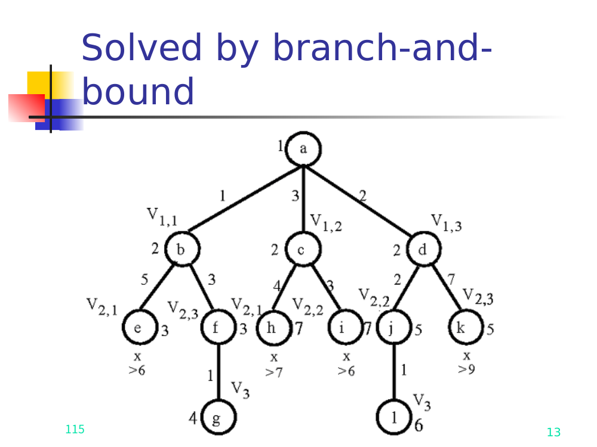
a (1)
├─[1]→ b V₁,₁ (2)
│ ├─[5]→ e V₂,₁ (3) x >6
│ └─[3]→ f V₂,₃ (3)
│ └─[1]→ g V₃ (4)
├─[3]→ c V₁,₂ (2)
│ ├─[4]→ h V₂,₁ (7) x >7
│ └─[3]→ i V₂,₂ (7) x >6
└─[2]→ d V₁,₃ (2)
├─[2]→ j V₂,₂ (5)
│ └─[1]→ l V₃ (6)
└─[7]→ k V₂,₃ (5) x >9
The optimal root→sink path is a→b→f→g, i.e. V₀→V₁,₁→V₂,₃→V₃ with cost 1+3+1 = 5 (node g labeled cost 4 inside the circle is the estimate at that node). This is the B&B search tree for Fig. 6-17 (slide 12 graph).最佳的 root→sink 路徑是 a→b→f→g，也就是 V₀→V₁,₁→V₂,₃→V₃，成本 1+3+1 = 5（節點 g 圓圈裡標的成本 4 是在那個節點的估計值）。這就是 Fig. 6-17（投影片 12 那張圖）的 B&B 搜尋樹。
render/A05full/slide-28.png). ✅ Verified.來源：投影片 28（render/A05full/slide-28.png）。✅ 已確認。With X-Y / Without X-Y decision boxes, each annotated with a lower bound L.B.. The left spine (the "With" choices) leads to the optimal tour.一連串的 With X-Y / Without X-Y 決策框，每個都標了一個 lower bound L.B.。左邊那條主幹（一路選「With」）就通往最佳 tour。| Node節點 | L.B. | role角色 |
|---|---|---|
| All | 96 | rootroot |
| With 4-6 | 99 | expanded (left spine)已展開（左主幹） |
| Without 4-6 | 128 | terminated已中止 |
| With 3-5 | 99 | expanded已展開 |
| Without 3-5 | 117 | to be expanded待展開 |
| With 2-1 | 112 | expanded已展開 |
| Without 2-1 | 125 | to be expanded待展開 |
| With 1-4 | 126 | expanded已展開 |
| Without 1-4 | 153 | terminated已中止 |
| With 6-7 | 126 | expanded已展開 |
| Without 6-7 | 141 | terminated已中止 |
| With 5-2 | 126 | expanded已展開 |
| Without 5-2 | — | No solution無解 |
| With 7-3 | (Solution) | optimal最佳 |
| Without 7-3 | — | No solution無解 |
Final answer (printed in the figure): Solution 1-4-6-7-3-5-2-1, Cost = 126.最後答案（圖上印的）：Solution 1-4-6-7-3-5-2-1, Cost = 126。
Resolves reconstruction item #14 — the full B&B tree and the optimal tour (
1-4-6-7-3-5-2-1, cost 126) are now extracted.解決了重建項目 #14 —— 整棵 B&B 樹跟最佳 tour（1-4-6-7-3-5-2-1，成本 126）現在都抄出來了。
render/A05full/slide-34.png). ✅ Verified.來源：投影片 34（render/A05full/slide-34.png）。✅ 已確認。0–30 in creation order. Edges labeled Xᵢ = 1 / Xᵢ = 0. Each live node carries U.B. (upper bound) and L.B. (lower bound). Many nodes are marked infeasible. (Recall the deck minimizes negative profit, so more-negative is better; U.B. = best feasible found, L.B. = relaxation bound.)方框節點依產生順序編號 0–30。邊標 Xᵢ = 1 / Xᵢ = 0。每個還活著的節點都帶 U.B.（upper bound）跟 L.B.（lower bound）。很多節點被標 infeasible（不可行）。（記得投影片是在最小化負利潤，所以越負越好；U.B. = 目前找到的最佳可行解，L.B. = relaxation 的 bound。）Per-node bounds, exactly as printed:每個節點的 bound，照投影片原樣抄：
| Node節點 | branch taken to reach it走到它所選的分支 | U.B. | L.B. | note備註 |
|---|---|---|---|---|
| 0 | (root)（root） | −16 | −18 | |
| 1 | X1=1 | −16 | −18 | |
| 2 | X1=0 | −14 | −17 | |
| 3 | X2=1 | −16 | −18 | |
| 4 | X2=0 | −15 | −18 | |
| 5 | X3=1 | infeasibleinfeasible（不可行） | ||
| 6 | X3=0 | −16 | −18 | |
| 7 | X4=1 | infeasibleinfeasible（不可行） | ||
| 8 | X4=0 | −16 | −18 | |
| 9 | X5=1 | infeasibleinfeasible（不可行） | ||
| 10 | X5=0 | −16 | −18 | |
| 11 | X6=1 | infeasibleinfeasible（不可行） | ||
| 12 | X6=0 | −16 | −16 | |
| 13 | (under 4) X3=1（在 4 底下）X3=1 | −15 | −18 | |
| 14 | (under 4) X3=0（在 4 底下）X3=0 | −17 | −18 | "a good upper bound is found here"「a good upper bound is found here」 |
| 15 | X4=1 | −17 | −17 | |
| 16 | X4=0 | −16 | −16 | |
| 17 | X5=1 | −17 | −17 | |
| 18 | X5=0 | −17 | −17 | |
| 19 | X6=1 | infeasibleinfeasible（不可行） | ||
| 20 | X6=0 | −17 | −17 | |
| 21 | (under 13) X4=1（在 13 底下）X4=1 | −15 | −18 | |
| 22 | (under 13) X4=0（在 13 底下）X4=0 | −16 | −18 | |
| 23 | X5=1 | −16 | −18 | |
| 24 | X5=0 | −14 | −14 | |
| 25 | X6=1 | infeasibleinfeasible（不可行） | ||
| 26 | X6=0 | −16 | −16 | |
| 27 | (under 21) X5=1（在 21 底下）X5=1 | infeasibleinfeasible（不可行） | ||
| 28 | (under 21) X5=0（在 21 底下）X5=0 | −15 | −18 | |
| 29 | X6=1 | infeasibleinfeasible（不可行） | ||
| 30 | X6=0 | −15 | −15 |
The branch labels in the figure are X1 (level 1, nodes 1/2), X2 (nodes 3/4), X3 (5/6 and 13/14), X4 (7/8, 21/22, 15/16), X5 (9/10, 27/28, 23/24, 17/18), X6 (11/12, 29/30, 25/26, 19/20). The annotation "(a good upper bound is found here)" sits at node 14. The optimal value −17 surfaces along the node 14 → 15 → 17/18 → 20 chain (X1=0,…) consistent with the optimal set {1,4,5} giving −17 in §10.圖上的分支標籤是 X1（第 1 層，節點 1/2）、X2（節點 3/4）、X3（5/6 跟 13/14）、X4（7/8, 21/22, 15/16）、X5（9/10, 27/28, 23/24, 17/18）、X6（11/12, 29/30, 25/26, 19/20）。「(a good upper bound is found here)」這個註記在節點 14。最佳值 −17 是沿著 node 14 → 15 → 17/18 → 20 這條鏈（X1=0,…）冒出來的，跟 §10 那個給出 −17 的最佳集合 {1,4,5} 一致。
Resolves reconstruction item #16 — all per-node U.B./L.B. values now transcribed (root −16/−18 confirmed).解決了重建項目 #16 —— 每個節點的 U.B./L.B. 現在都抄好了（root −16/−18 確認）。
render/A05full/slide-37..42.png) — the A* search tree built on the Fig. 6-36 graph (slide 36). ✅ Verified.來源：投影片 37–42（render/A05full/slide-37..42.png）—— 建在 Fig. 6-36 圖（投影片 36）上的 A* 搜尋樹。✅ 已確認。R. Each edge has a letter id and a weight g-increment; each node has a heuristic h value shown beneath it. × marks a node not (yet) expanded / a leaf in that snapshot. (The exact g/h/f table is given just below.)一棵 root 在 R 的搜尋樹。每條邊有一個字母 id 跟一個 g 的增量；每個節點下面標一個 heuristic h 值。× 代表這張快照裡還沒（被）展開的節點／葉子。（精確的 g/h/f 表在下面。）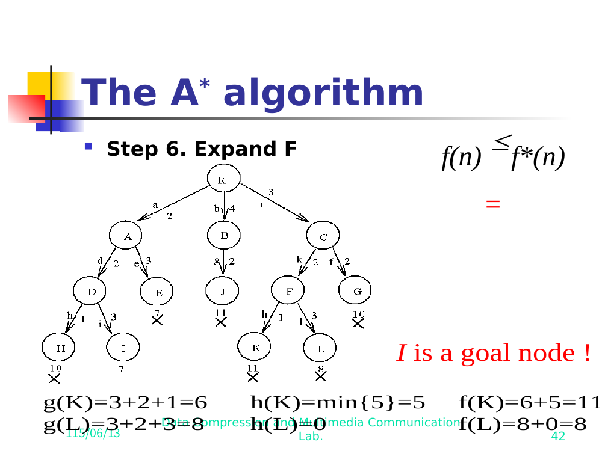
Edges (from slides 37–42):邊（來自投影片 37–42）：
| Edge idEdge id | From → To從 → 到 | weight權重 |
|---|---|---|
| a | R → A | 2 |
| b | R → B | 4 |
| c | R → C | 3 |
| d | A → D | 2 |
| e | A → E | 3 |
| g | B → J | 2 |
| k | C → F | 2 |
| f | C → G | 2 |
| h | D → H | 1 |
| i | D → I | 3 |
| h | F → K | 1 |
| l | F → L | 3 |
Exact g/h/f per node (read directly from slides 37–42):每個節點精確的 g/h/f（直接從投影片 37–42 讀出來）：
| Node節點 | g | h | f | source來源 |
|---|---|---|---|---|
| A | 2 | 2 | 4 | slide 37投影片 37 |
| B | 4 | 2 | 6 | slide 37投影片 37 |
| C | 3 | 2 | 5 | slide 37投影片 37 |
| D | 4 | 1 | 5 | slide 38投影片 38 |
| E | 5 | 2 | 7 | slide 38 (×)投影片 38 (×) |
| F | 5 | 1 | 6 | slide 39投影片 39 |
| G | 5 | 5 | 10 | slide 39 (×)投影片 39 (×) |
| H | 5 | 5 | 10 | slide 40 (×)投影片 40 (×) |
| I | 7 | 0 | 7 | slide 40 — GOAL投影片 40 —— GOAL |
| J | 6 | 5 | 11 | slide 41 (×)投影片 41 (×) |
| K | 6 | 5 | 11 | slide 42 (×)投影片 42 (×) |
| L | 8 | 0 | 8 | slide 42 (×)投影片 42 (×) |
Expansion order (each step picks the smallest-f open node): A(4) → C(5) → D(5) → B(6) → F(6). After expanding F, the smallest open node is I (f=7), which is a goal node ("I is a goal node !", slide 42) → stop, optimal.展開順序（每步挑還沒展開、f 最小的節點）：A(4) → C(5) → D(5) → B(6) → F(6)。展開 F 之後，還沒展開的節點裡最小的是 I（f=7），而它是 goal node（「I is a goal node !」，投影片 42）→ 停，已是最佳解。
✅ Verified against slides 36–42 (resolves item #17). Correction: goal node is I, not F.✅ 對照投影片 36–42（解決項目 #17）。更正：goal node 是 I，不是 F。
render/A05full/slide-49.png) — ✅ Verified.來源：投影片 49（render/A05full/slide-49.png）— ✅ 已確認。root with three children; nodes labeled A–I. Edge labels are g+h sums; node interiors hold the net set assigned to that track; g(n) = tree level, h(n) = maximal local density. Goal reached at node I.root 有三個小孩；節點標 A–I。邊上的標籤是 g+h 的和；節點內部放的是指派給那條 track 的 net 集合；g(n) = 樹的層數，h(n) = maximal local density。Goal 在節點 I 到達。root
├─[1+3]→ A {8,1} (f=4)
├─[1+3]→ B {7,3,1} (f=4)
│ ├─[2+3]→ D {4,2} (f=5)
│ ├─[2+2]→ E {8,2} (f=4)
│ │ ├─[3+2]→ G {4} (f=5)
│ │ └─[3+1]→ H {5} (f=4)
│ │ └─[4]→ I {4,6} ← GOAL
│ └─[2+2]→ F {5} (f=4)
└─[1+3]→ C {7,5} (f=4)
✅ Verified against slide 49: this is Fig. 6-48. The three root children
{8,1}, {7,3,1}, {7,5}are exactly the three maximal HCG cliques (= Fig. 6-46 first level). The node states are net-cliques assigned to successive tracks; goal is node I.✅ 對照投影片 49：這是 Fig. 6-48。root 的三個小孩{8,1}, {7,3,1}, {7,5}正是 HCG 的三個 maximal clique（= Fig. 6-46 第一層）。節點狀態是依序指派給各 track 的 net-clique；goal 是節點 I。
render/A05full/slide-47.png) — ✅ Verified.來源：投影片 47（render/A05full/slide-47.png）— ✅ 已確認。1–8. Edge tail → head means "tail must be left of head if in the same track". Arrows:一張畫在 net 1–8 上的有向圖。邊的箭尾 → 箭頭代表「如果在同一條 track，箭尾要在箭頭左邊」。箭頭：7 → 5, 7 → 6, 7 → 3, 7 → 1, 7 → 2
8 → 1, 8 → 2
4 → 6, 4 → 1, 4 → 2
3 → 1, 3 → 2
Sinks 1 and 2 receive the most arrows; 7, 8, 4 are sources; 3, 5, 6 intermediate.收到最多箭頭的 sink 是 1 跟 2；7, 8, 4 是 source；3, 5, 6 在中間。
✅ Verified against slide 47: this is the channel-routing HCG (slide annotation: "net 8 must be to the left of net 1 and net 2 if they are in the same track"), NOT a personnel/VCG graph.✅ 對照投影片 47：這是 channel-routing 的 HCG（投影片註記：「net 8 must be to the left of net 1 and net 2 if they are in the same track」），不是 personnel/VCG 圖。
0 = none):13 個欄；每欄各有一個上 terminal 跟一個下 terminal（net 編號，0 = 沒有）：| Column欄 | 1 | 2 | 3 | 4 | 5 | 6 | 7 | 8 | 9 | 10 | 11 | 12 | 13 |
|---|---|---|---|---|---|---|---|---|---|---|---|---|---|
| Top上 | 4 | 8 | 0 | 7 | 0 | 3 | 6 | 0 | 0 | 2 | 1 | 5 | 0 |
| Bottom下 | 0 | 0 | 7 | 0 | 5 | 4 | 0 | 8 | 3 | 0 | 2 | 6 | 1 |
1 → 2, 3 → 4, 5 → 6. Nets 7 and 8 are isolated. Annotation: "e.g. net 3 must be wired before net 4."邊（在共用的那一欄，上面 net → 下面 net）：1 → 2、3 → 4、5 → 6。net 7 跟 8 是孤立的。註記：「e.g. net 3 must be wired before net 4.」1, 2, 7, 5; bottom row 6, 3, 4. Edges: 1-2, 1-6, 1-3, 2-3, 6-5 (long crossing edge), 7-5, 7-4, 3-4, 4-5.頂點排法：上排 1, 2, 7, 5；下排 6, 3, 4。邊：1-2, 1-6, 1-3, 2-3, 6-5（一條很長的交叉邊）、7-5, 7-4, 3-4, 4-5。3,21,7,9; Table 6-2 row reductions −12,−26,−3,−10 + column-2 −3; lower bound 54.來源：投影片 16, 17, 18。✅ 已確認 —— 完整表格看 §8。Table 6-1 P3 列 = 3,21,7,9；Table 6-2 列 reduction −12,−26,−3,−10 加第 2 欄 −3；lower bound 54。 0
/ \
1 2
/ \ \
2 3 1
/| | / \
3 4 2 3 4
| | | | |
4 3 4 4 3
0(0)
├─ 1(29)
│ ├─ 2(59) ─┬─ 3(66) ── 4(81)
│ │ └─ 4(68) ── 3(78)
│ └─ 3(55) ── 2(76)
└─ 2(19)
└─ 1(51) ─┬─ 3(58) ── 4(73)
└─ 4(60) ── 3(70)
0(54) → 2(58) → 1(64) → {3(68)→4(73), 4(70)→3(70)}; optimal feasible cost = 70.Bounding 樹（投影片 21） —— 節點值 = lower bound；主幹 0(54) → 2(58) → 1(64) → {3(68)→4(73), 4(70)→3(70)}；最佳可行成本 = 70。−7,−1,−4 (Table 6-5) → lower bound 96. Table 6-6 = "arc 4-6 included" with (6,4)=∞; Table 6-7 reduces row 5 by −3 → lower bound 99.來源：投影片 22, 23, 24, 26, 27。✅ 已確認 —— 完整表格在 §9。列 reduction 總和 84（Table 6-4）；欄 reduction −7,−1,−4（Table 6-5）→ lower bound 96。Table 6-6 = 「納入 arc 4-6」並 (6,4)=∞；Table 6-7 把第 5 列 reduce −3 → lower bound 99。 [All solutions] L.B. = 96
/ \
[with arc 4-6] [without arc 4-6]
L.B. = 96 L.B. = 96+32 = 128
Splitting arc = 4-6 (exclusion penalty 32, the largest; the 3-5 alternative penalty is 17+1=18).分裂用的 arc = 4-6（排除懲罰 32，最大；改用 3-5 的懲罰是 17+1=18）。
With the full 49-slide render set (render/A05full/), every previously-reconstructed item (#1–#18) is now verified directly from a slide. Newly transcribed figures/tables added to this Appendix: Fig. 6-6 (Hamiltonian graph, slide 4), Tables 6-1/6-2 (personnel, slides 16–18), personnel B&B trees (slides 19–21), Tables 6-3..6-7 (TSP, slides 22–27), Fig. 6-25 (TSP decision tree top, slide 25), Fig. 6-40 (channel spec, slide 43), Fig. 6-41 HCG (slide 47), VCG (slide 48), Fig. 6-46/6-48 (channel A* trees, slides 48–49).有了完整的 49 張 render（render/A05full/），每一個之前用推測重建的項目（#1–#18）現在都直接從投影片確認了。這份附錄新加的圖／表：Fig. 6-6（Hamiltonian 圖，投影片 4）、Table 6-1/6-2（personnel，投影片 16–18）、personnel B&B 樹（投影片 19–21）、Table 6-3..6-7（TSP，投影片 22–27）、Fig. 6-25（TSP decision tree 頂層，投影片 25）、Fig. 6-40（channel 規格，投影片 43）、Fig. 6-41 HCG（投影片 47）、VCG（投影片 48）、Fig. 6-46/6-48（channel A* 樹，投影片 48–49）。
Corrections made during the clean-render pass:
- The graph called "Fig. 6-17" before is Fig. 6-36 (A* example, slide 36); the true Fig. 6-17 is the V₀…V₃ multi-stage graph (slide 12, B&B tree slide 13).
- Fig. 6-21 has only J1→J3 and J2→J4 — no J1→J4 diagonal (was wrong).
- The A* goal node is I, not F (slide 42).
- The uncaptioned png_014 graph = Fig. 6-41 HCG; the uncaptioned png_015 tree = Fig. 6-48.這一輪乾淨 render 做的更正：
- 之前叫「Fig. 6-17」的那張圖其實是 Fig. 6-36（A* 範例，投影片 36）；真正的 Fig. 6-17 是 V₀…V₃ 的 multi-stage graph（投影片 12，B&B 樹在投影片 13）。
- Fig. 6-21 只有 J1→J3 跟 J2→J4 —— 沒有 J1→J4 斜線（之前是錯的）。
- A* 的 goal node 是 I，不是 F（投影片 42）。
- 沒標題的 png_014 圖 = Fig. 6-41 HCG；沒標題的 png_015 樹 = Fig. 6-48。
Questions on anything here? Ask your teacher (the agent) — that's what I'm for.
The original slides are rendered as images in render/ for eyeball validation.這裡有任何問題嗎？問你的老師（就是這個 agent）—— 我就是幹這個的。原始投影片都 render 成圖片放在 render/，方便你用眼睛核對。